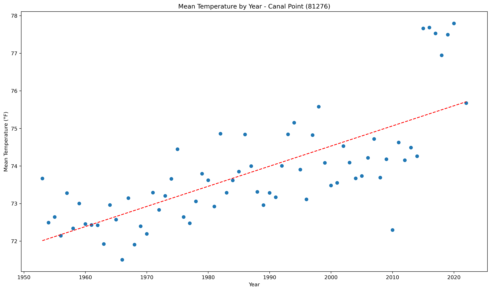
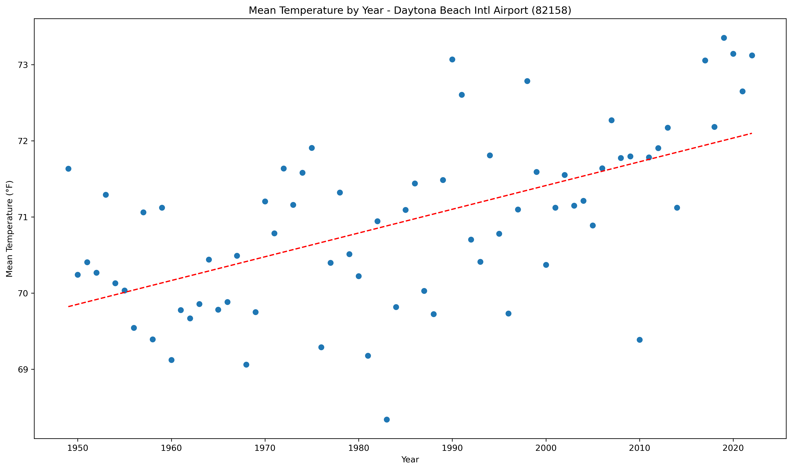
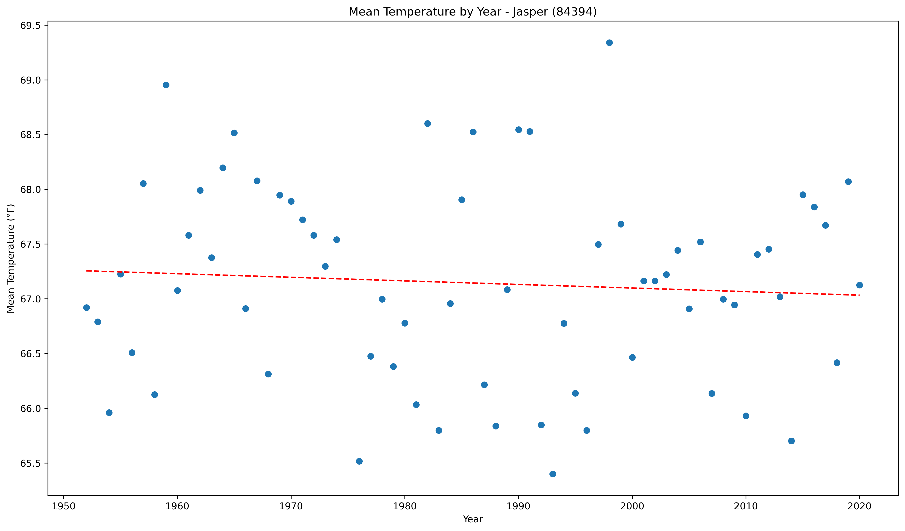
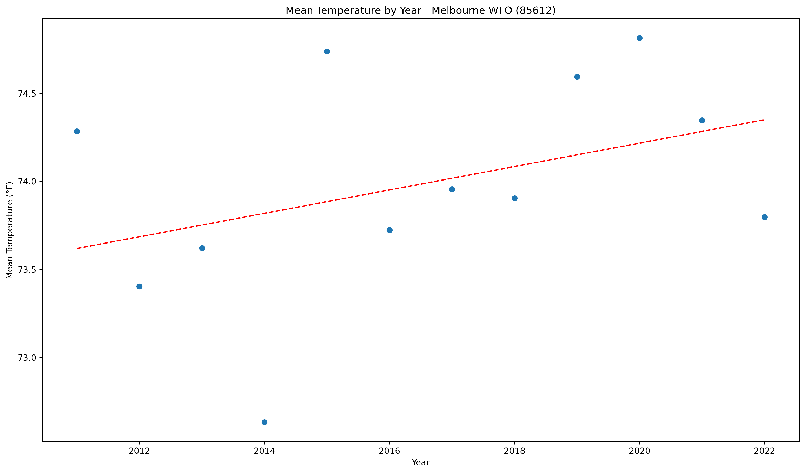
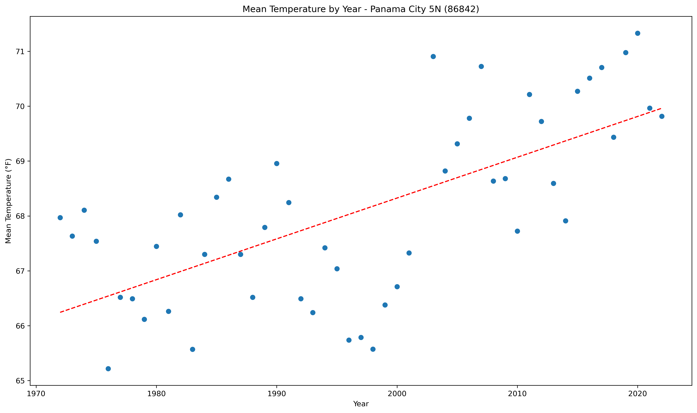
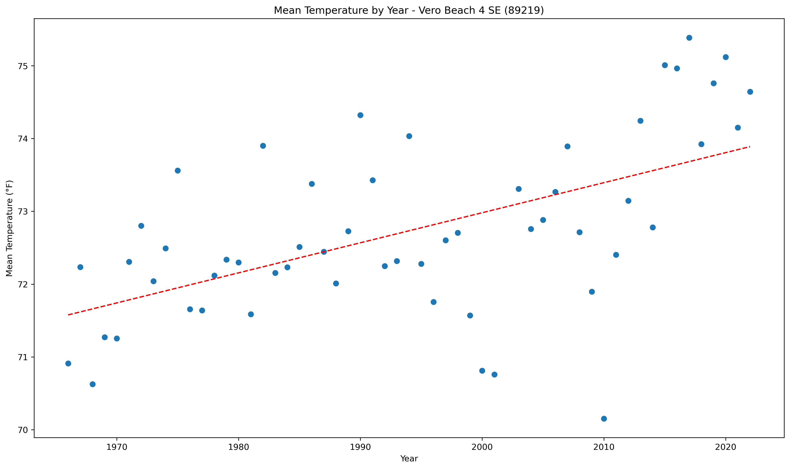
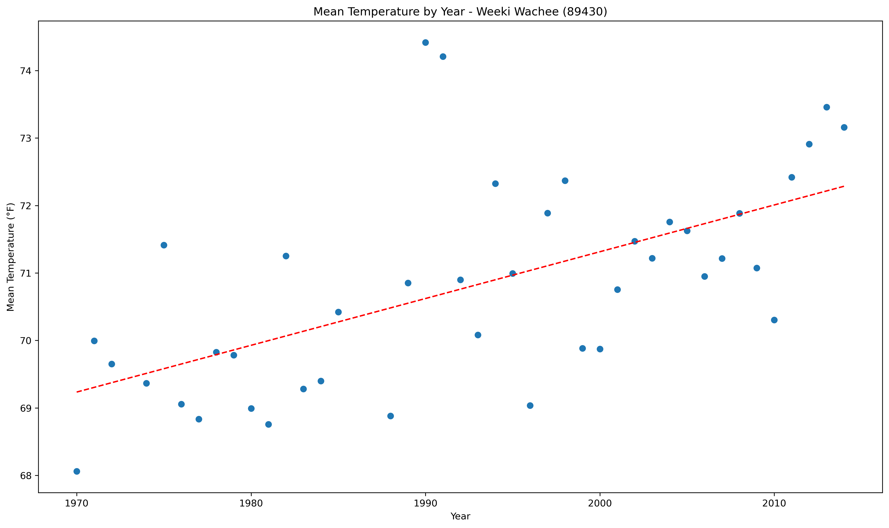

<!DOCTYPE html>
<html>
<head>
    
    <meta http-equiv="content-type" content="text/html; charset=UTF-8" />
    
        <script>
            L_NO_TOUCH = false;
            L_DISABLE_3D = false;
        </script>
    
    <style>html, body {width: 100%;height: 100%;margin: 0;padding: 0;}</style>
    <style>#map {position:absolute;top:0;bottom:0;right:0;left:0;}</style>
    <script src="https://cdn.jsdelivr.net/npm/leaflet@1.9.3/dist/leaflet.js"></script>
    <script src="https://code.jquery.com/jquery-1.12.4.min.js"></script>
    <script src="https://cdn.jsdelivr.net/npm/bootstrap@5.2.2/dist/js/bootstrap.bundle.min.js"></script>
    <script src="https://cdnjs.cloudflare.com/ajax/libs/Leaflet.awesome-markers/2.0.2/leaflet.awesome-markers.js"></script>
    <link rel="stylesheet" href="https://cdn.jsdelivr.net/npm/leaflet@1.9.3/dist/leaflet.css"/>
    <link rel="stylesheet" href="https://cdn.jsdelivr.net/npm/bootstrap@5.2.2/dist/css/bootstrap.min.css"/>
    <link rel="stylesheet" href="https://netdna.bootstrapcdn.com/bootstrap/3.0.0/css/bootstrap.min.css"/>
    <link rel="stylesheet" href="https://cdn.jsdelivr.net/npm/@fortawesome/fontawesome-free@6.2.0/css/all.min.css"/>
    <link rel="stylesheet" href="https://cdnjs.cloudflare.com/ajax/libs/Leaflet.awesome-markers/2.0.2/leaflet.awesome-markers.css"/>
    <link rel="stylesheet" href="https://cdn.jsdelivr.net/gh/python-visualization/folium/folium/templates/leaflet.awesome.rotate.min.css"/>
    
            <meta name="viewport" content="width=device-width,
                initial-scale=1.0, maximum-scale=1.0, user-scalable=no" />
            <style>
                #map_195ab094d2203ae33868c11c782a4ce9 {
                    position: relative;
                    width: 100.0%;
                    height: 100.0%;
                    left: 0.0%;
                    top: 0.0%;
                }
                .leaflet-container { font-size: 1rem; }
            </style>
        
</head>
<body>
    
    
            <div class="folium-map" id="map_195ab094d2203ae33868c11c782a4ce9" ></div>
        
</body>
<script>
    
    
            var map_195ab094d2203ae33868c11c782a4ce9 = L.map(
                "map_195ab094d2203ae33868c11c782a4ce9",
                {
                    center: [28.0, -82.5],
                    crs: L.CRS.EPSG3857,
                    zoom: 7,
                    zoomControl: false,
                    preferCanvas: false,
                }
            );

            

        
    
            var tile_layer_0adecfa5b81e850a6d67847b14047d75 = L.tileLayer(
                "https://cartodb-basemaps-{s}.global.ssl.fastly.net/dark_all/{z}/{x}/{y}.png",
                {"attribution": "\u0026copy; \u003ca target=\"_blank\" href=\"http://www.openstreetmap.org/copyright\"\u003eOpenStreetMap\u003c/a\u003e contributors \u0026copy; \u003ca target=\"_blank\" href=\"http://cartodb.com/attributions\"\u003eCartoDB\u003c/a\u003e, CartoDB \u003ca target=\"_blank\" href =\"http://cartodb.com/attributions\"\u003eattributions\u003c/a\u003e", "detectRetina": false, "maxNativeZoom": 18, "maxZoom": 18, "minZoom": 7, "noWrap": false, "opacity": 1, "subdomains": "abc", "tms": false}
            ).addTo(map_195ab094d2203ae33868c11c782a4ce9);
        
    
            var marker_7fce47535099c647752abb7a5f44daa2 = L.marker(
                [29.43, -85.1],
                {}
            ).addTo(map_195ab094d2203ae33868c11c782a4ce9);
        
    
            var icon_84841c44be363a7616b26bcb61afe1d6 = L.AwesomeMarkers.icon(
                {"extraClasses": "fa-rotate-0", "icon": "info-sign", "iconColor": "white", "markerColor": "blue", "prefix": "glyphicon"}
            );
            marker_7fce47535099c647752abb7a5f44daa2.setIcon(icon_84841c44be363a7616b26bcb61afe1d6);
        
    
        var popup_ee3b5fc719caf879329ff57b49d986f9 = L.popup({"maxWidth": 1000, "minWidth": 500});

        
            
                var html_b06947d93713aabe0f9bf9ac5537db0e = $(`<div id="html_b06947d93713aabe0f9bf9ac5537db0e" style="width: 100.0%; height: 100.0%;"><b>Apalachicola AP (80211)</b><br>lat: 29.43, lon: -85.1<br><a href='../../static/img/plots/trends/meantemp_yearly/80211_mean_trend_yearly.png'></a></div>`)[0];
                popup_ee3b5fc719caf879329ff57b49d986f9.setContent(html_b06947d93713aabe0f9bf9ac5537db0e);
            
        

        marker_7fce47535099c647752abb7a5f44daa2.bindPopup(popup_ee3b5fc719caf879329ff57b49d986f9)
        ;

        
    
    
            var marker_d455a6c3f34d89401b7dd1639fcd56e5 = L.marker(
                [27.13, -81.52],
                {}
            ).addTo(map_195ab094d2203ae33868c11c782a4ce9);
        
    
            var icon_7de850c97edf4bb3a1064e2210a21585 = L.AwesomeMarkers.icon(
                {"extraClasses": "fa-rotate-0", "icon": "info-sign", "iconColor": "white", "markerColor": "orange", "prefix": "glyphicon"}
            );
            marker_d455a6c3f34d89401b7dd1639fcd56e5.setIcon(icon_7de850c97edf4bb3a1064e2210a21585);
        
    
        var popup_0d7778cb75150504a0be5a3c2a9629b0 = L.popup({"maxWidth": 1000, "minWidth": 500});

        
            
                var html_07b8e94e9b41f3a9473d79f792339b30 = $(`<div id="html_07b8e94e9b41f3a9473d79f792339b30" style="width: 100.0%; height: 100.0%;"><b>Arcadia (80228)</b><br>lat: 27.13, lon: -81.52<br><a href='../../static/img/plots/trends/meantemp_yearly/80228_mean_trend_yearly.png'></a></div>`)[0];
                popup_0d7778cb75150504a0be5a3c2a9629b0.setContent(html_07b8e94e9b41f3a9473d79f792339b30);
            
        

        marker_d455a6c3f34d89401b7dd1639fcd56e5.bindPopup(popup_0d7778cb75150504a0be5a3c2a9629b0)
        ;

        
    
    
            var marker_7769d30935a5911f6e32cbaa0e41674b = L.marker(
                [27.1, -81.21],
                {}
            ).addTo(map_195ab094d2203ae33868c11c782a4ce9);
        
    
            var icon_36585866bb257f0bdf1519872bb4bc1a = L.AwesomeMarkers.icon(
                {"extraClasses": "fa-rotate-0", "icon": "info-sign", "iconColor": "white", "markerColor": "orange", "prefix": "glyphicon"}
            );
            marker_7769d30935a5911f6e32cbaa0e41674b.setIcon(icon_36585866bb257f0bdf1519872bb4bc1a);
        
    
        var popup_62e4fc226230d7bdd256880523572ed8 = L.popup({"maxWidth": 1000, "minWidth": 500});

        
            
                var html_2f9ec4bb06040c70613f3f5fbe589ce7 = $(`<div id="html_2f9ec4bb06040c70613f3f5fbe589ce7" style="width: 100.0%; height: 100.0%;"><b>Archbold Bio Stn (80236)</b><br>lat: 27.1, lon: -81.21<br><a href='../../static/img/plots/trends/meantemp_yearly/80236_mean_trend_yearly.png'></a></div>`)[0];
                popup_62e4fc226230d7bdd256880523572ed8.setContent(html_2f9ec4bb06040c70613f3f5fbe589ce7);
            
        

        marker_7769d30935a5911f6e32cbaa0e41674b.bindPopup(popup_62e4fc226230d7bdd256880523572ed8)
        ;

        
    
    
            var marker_4da259b61d4b0db830a2aa6d03ddbf6a = L.marker(
                [27.35, -81.31],
                {}
            ).addTo(map_195ab094d2203ae33868c11c782a4ce9);
        
    
            var icon_9b92f831f4a3528a2e33f2e6fa7e6eb7 = L.AwesomeMarkers.icon(
                {"extraClasses": "fa-rotate-0", "icon": "info-sign", "iconColor": "white", "markerColor": "orange", "prefix": "glyphicon"}
            );
            marker_4da259b61d4b0db830a2aa6d03ddbf6a.setIcon(icon_9b92f831f4a3528a2e33f2e6fa7e6eb7);
        
    
        var popup_9060b39ffc79af1d6deac603a142d7a5 = L.popup({"maxWidth": 1000, "minWidth": 500});

        
            
                var html_fbbac795975a270eeff391537ac7bcf4 = $(`<div id="html_fbbac795975a270eeff391537ac7bcf4" style="width: 100.0%; height: 100.0%;"><b>Avon Park 2 W (80369)</b><br>lat: 27.35, lon: -81.31<br><a href='../../static/img/plots/trends/meantemp_yearly/80369_mean_trend_yearly.png'></a></div>`)[0];
                popup_9060b39ffc79af1d6deac603a142d7a5.setContent(html_fbbac795975a270eeff391537ac7bcf4);
            
        

        marker_4da259b61d4b0db830a2aa6d03ddbf6a.bindPopup(popup_9060b39ffc79af1d6deac603a142d7a5)
        ;

        
    
    
            var marker_d7e0d5458a15845ef7ccf8a7c8f45886 = L.marker(
                [27.53, -81.5],
                {}
            ).addTo(map_195ab094d2203ae33868c11c782a4ce9);
        
    
            var icon_dd0094fdf8eb0f0c303a84b8f36d3e66 = L.AwesomeMarkers.icon(
                {"extraClasses": "fa-rotate-0", "icon": "info-sign", "iconColor": "white", "markerColor": "orange", "prefix": "glyphicon"}
            );
            marker_d7e0d5458a15845ef7ccf8a7c8f45886.setIcon(icon_dd0094fdf8eb0f0c303a84b8f36d3e66);
        
    
        var popup_d706a63eb638f07cc974b006dc058396 = L.popup({"maxWidth": 1000, "minWidth": 500});

        
            
                var html_928b33336b3450a6e2521bc5be2e590d = $(`<div id="html_928b33336b3450a6e2521bc5be2e590d" style="width: 100.0%; height: 100.0%;"><b>Bartow (80478)</b><br>lat: 27.53, lon: -81.5<br><a href='../../static/img/plots/trends/meantemp_yearly/80478_mean_trend_yearly.png'></a></div>`)[0];
                popup_d706a63eb638f07cc974b006dc058396.setContent(html_928b33336b3450a6e2521bc5be2e590d);
            
        

        marker_d7e0d5458a15845ef7ccf8a7c8f45886.bindPopup(popup_d706a63eb638f07cc974b006dc058396)
        ;

        
    
    
            var marker_9c92c893c2fe99eb959a4987d07478c6 = L.marker(
                [26.41, -80.4],
                {}
            ).addTo(map_195ab094d2203ae33868c11c782a4ce9);
        
    
            var icon_a92be229c9bed93ea88e430edd7b402f = L.AwesomeMarkers.icon(
                {"extraClasses": "fa-rotate-0", "icon": "info-sign", "iconColor": "white", "markerColor": "red", "prefix": "glyphicon"}
            );
            marker_9c92c893c2fe99eb959a4987d07478c6.setIcon(icon_a92be229c9bed93ea88e430edd7b402f);
        
    
        var popup_86d1ce06546c81023a06de0eb008e8f6 = L.popup({"maxWidth": 1000, "minWidth": 500});

        
            
                var html_2444e6769d82e1f750cae7c70cc897ca = $(`<div id="html_2444e6769d82e1f750cae7c70cc897ca" style="width: 100.0%; height: 100.0%;"><b>Belle Glade (80611)</b><br>lat: 26.41, lon: -80.4<br><a href='../../static/img/plots/trends/meantemp_yearly/80611_mean_trend_yearly.png'></a></div>`)[0];
                popup_86d1ce06546c81023a06de0eb008e8f6.setContent(html_2444e6769d82e1f750cae7c70cc897ca);
            
        

        marker_9c92c893c2fe99eb959a4987d07478c6.bindPopup(popup_86d1ce06546c81023a06de0eb008e8f6)
        ;

        
    
    
            var marker_b543ae61b6b6d479d2474e84dbf5ed45 = L.marker(
                [27.26, -82.3],
                {}
            ).addTo(map_195ab094d2203ae33868c11c782a4ce9);
        
    
            var icon_1a71a419d901d65238c0fcf440765bdb = L.AwesomeMarkers.icon(
                {"extraClasses": "fa-rotate-0", "icon": "info-sign", "iconColor": "white", "markerColor": "orange", "prefix": "glyphicon"}
            );
            marker_b543ae61b6b6d479d2474e84dbf5ed45.setIcon(icon_1a71a419d901d65238c0fcf440765bdb);
        
    
        var popup_e51cc977e0d3066d191c7142bb1cef59 = L.popup({"maxWidth": 1000, "minWidth": 500});

        
            
                var html_85f793c4dfc7d8480d7eac51703a814c = $(`<div id="html_85f793c4dfc7d8480d7eac51703a814c" style="width: 100.0%; height: 100.0%;"><b>Bradenton 5 ESE (80945)</b><br>lat: 27.26, lon: -82.3<br><a href='../../static/img/plots/trends/meantemp_yearly/80945_mean_trend_yearly.png'></a></div>`)[0];
                popup_e51cc977e0d3066d191c7142bb1cef59.setContent(html_85f793c4dfc7d8480d7eac51703a814c);
            
        

        marker_b543ae61b6b6d479d2474e84dbf5ed45.bindPopup(popup_e51cc977e0d3066d191c7142bb1cef59)
        ;

        
    
    
            var marker_2814fe37954ce16a8dabf8dda82edc16 = L.marker(
                [28.36, -82.21],
                {}
            ).addTo(map_195ab094d2203ae33868c11c782a4ce9);
        
    
            var icon_57f5ba1ca4439397a63dbdc555a1fec7 = L.AwesomeMarkers.icon(
                {"extraClasses": "fa-rotate-0", "icon": "info-sign", "iconColor": "white", "markerColor": "orange", "prefix": "glyphicon"}
            );
            marker_2814fe37954ce16a8dabf8dda82edc16.setIcon(icon_57f5ba1ca4439397a63dbdc555a1fec7);
        
    
        var popup_49fad03a730942e1e8bb8f0125e35707 = L.popup({"maxWidth": 1000, "minWidth": 500});

        
            
                var html_5fc3b4d9973bd8e43ba00433c85905c2 = $(`<div id="html_5fc3b4d9973bd8e43ba00433c85905c2" style="width: 100.0%; height: 100.0%;"><b>Brooksville Chin Hill (81046)</b><br>lat: 28.36, lon: -82.21<br><a href='../../static/img/plots/trends/meantemp_yearly/81046_mean_trend_yearly.png'></a></div>`)[0];
                popup_49fad03a730942e1e8bb8f0125e35707.setContent(html_5fc3b4d9973bd8e43ba00433c85905c2);
            
        

        marker_2814fe37954ce16a8dabf8dda82edc16.bindPopup(popup_49fad03a730942e1e8bb8f0125e35707)
        ;

        
    
    
            var marker_46bfcaf2982c77db098a094fe9cd0fd6 = L.marker(
                [28.39, -82.4],
                {}
            ).addTo(map_195ab094d2203ae33868c11c782a4ce9);
        
    
            var icon_a66a884618875fd99d532a55f2cb9fff = L.AwesomeMarkers.icon(
                {"extraClasses": "fa-rotate-0", "icon": "info-sign", "iconColor": "white", "markerColor": "orange", "prefix": "glyphicon"}
            );
            marker_46bfcaf2982c77db098a094fe9cd0fd6.setIcon(icon_a66a884618875fd99d532a55f2cb9fff);
        
    
        var popup_4217ee23975a4d86c77ecfa9e24321cf = L.popup({"maxWidth": 1000, "minWidth": 500});

        
            
                var html_7265ed4e9e1174fc3d87e21d431c2324 = $(`<div id="html_7265ed4e9e1174fc3d87e21d431c2324" style="width: 100.0%; height: 100.0%;"><b>Bushnell 1 E (81163)</b><br>lat: 28.39, lon: -82.4<br><a href='../../static/img/plots/trends/meantemp_yearly/81163_mean_trend_yearly.png'></a></div>`)[0];
                popup_4217ee23975a4d86c77ecfa9e24321cf.setContent(html_7265ed4e9e1174fc3d87e21d431c2324);
            
        

        marker_46bfcaf2982c77db098a094fe9cd0fd6.bindPopup(popup_4217ee23975a4d86c77ecfa9e24321cf)
        ;

        
    
    
            var marker_b1be3344a1b8c0f1d757767313379342 = L.marker(
                [26.51, -80.37],
                {}
            ).addTo(map_195ab094d2203ae33868c11c782a4ce9);
        
    
            var icon_0e7bdc6d982e771cebc3d40311e889a4 = L.AwesomeMarkers.icon(
                {"extraClasses": "fa-rotate-0", "icon": "info-sign", "iconColor": "white", "markerColor": "red", "prefix": "glyphicon"}
            );
            marker_b1be3344a1b8c0f1d757767313379342.setIcon(icon_0e7bdc6d982e771cebc3d40311e889a4);
        
    
        var popup_24fc4fba46311654dd4c58b536a6ecd5 = L.popup({"maxWidth": 1000, "minWidth": 500});

        
            
                var html_8d37f2ea8ddefaa21b8f4159d2cb983c = $(`<div id="html_8d37f2ea8ddefaa21b8f4159d2cb983c" style="width: 100.0%; height: 100.0%;"><b>Canal Point USDA (81276)</b><br>lat: 26.51, lon: -80.37<br><a href='../../static/img/plots/trends/meantemp_yearly/81276_mean_trend_yearly.png'></a></div>`)[0];
                popup_24fc4fba46311654dd4c58b536a6ecd5.setContent(html_8d37f2ea8ddefaa21b8f4159d2cb983c);
            
        

        marker_b1be3344a1b8c0f1d757767313379342.bindPopup(popup_24fc4fba46311654dd4c58b536a6ecd5)
        ;

        
    
    
            var marker_f0867de8586ceb1dd874856e375a3a29 = L.marker(
                [30.47, -85.29],
                {}
            ).addTo(map_195ab094d2203ae33868c11c782a4ce9);
        
    
            var icon_3aa0a3d921c1be172665f434e33e04c3 = L.AwesomeMarkers.icon(
                {"extraClasses": "fa-rotate-0", "icon": "info-sign", "iconColor": "white", "markerColor": "blue", "prefix": "glyphicon"}
            );
            marker_f0867de8586ceb1dd874856e375a3a29.setIcon(icon_3aa0a3d921c1be172665f434e33e04c3);
        
    
        var popup_52616e8d4cbbe0e4ab09c2b9763cbb40 = L.popup({"maxWidth": 1000, "minWidth": 500});

        
            
                var html_3551cbac6b6dc58ddc5ad5bc1268ecc6 = $(`<div id="html_3551cbac6b6dc58ddc5ad5bc1268ecc6" style="width: 100.0%; height: 100.0%;"><b>Chipley (81544)</b><br>lat: 30.47, lon: -85.29<br><a href='../../static/img/plots/trends/meantemp_yearly/81544_mean_trend_yearly.png'></a></div>`)[0];
                popup_52616e8d4cbbe0e4ab09c2b9763cbb40.setContent(html_3551cbac6b6dc58ddc5ad5bc1268ecc6);
            
        

        marker_f0867de8586ceb1dd874856e375a3a29.bindPopup(popup_52616e8d4cbbe0e4ab09c2b9763cbb40)
        ;

        
    
    
            var marker_f2c53a9165cc9602607b73fe21d27828 = L.marker(
                [28.27, -81.43],
                {}
            ).addTo(map_195ab094d2203ae33868c11c782a4ce9);
        
    
            var icon_6257e4c8b6588ad5bc02a6c78ee63c95 = L.AwesomeMarkers.icon(
                {"extraClasses": "fa-rotate-0", "icon": "info-sign", "iconColor": "white", "markerColor": "orange", "prefix": "glyphicon"}
            );
            marker_f2c53a9165cc9602607b73fe21d27828.setIcon(icon_6257e4c8b6588ad5bc02a6c78ee63c95);
        
    
        var popup_31cad0e4ff0a5e9b4b50303af1202868 = L.popup({"maxWidth": 1000, "minWidth": 500});

        
            
                var html_7dc33ba24405c20bb226759a6b0a751d = $(`<div id="html_7dc33ba24405c20bb226759a6b0a751d" style="width: 100.0%; height: 100.0%;"><b>Clermont 9 S (81641)</b><br>lat: 28.27, lon: -81.43<br><a href='../../static/img/plots/trends/meantemp_yearly/81641_mean_trend_yearly.png'></a></div>`)[0];
                popup_31cad0e4ff0a5e9b4b50303af1202868.setContent(html_7dc33ba24405c20bb226759a6b0a751d);
            
        

        marker_f2c53a9165cc9602607b73fe21d27828.bindPopup(popup_31cad0e4ff0a5e9b4b50303af1202868)
        ;

        
    
    
            var marker_e6f2ac06623a7c46e225caf0919bd3b7 = L.marker(
                [29.25, -81.31],
                {}
            ).addTo(map_195ab094d2203ae33868c11c782a4ce9);
        
    
            var icon_652932cad4ba585665d9f17c818d3299 = L.AwesomeMarkers.icon(
                {"extraClasses": "fa-rotate-0", "icon": "info-sign", "iconColor": "white", "markerColor": "blue", "prefix": "glyphicon"}
            );
            marker_e6f2ac06623a7c46e225caf0919bd3b7.setIcon(icon_652932cad4ba585665d9f17c818d3299);
        
    
        var popup_3092ccb26cfabd7a76ff293d5bdcf7f1 = L.popup({"maxWidth": 1000, "minWidth": 500});

        
            
                var html_2475f96a0139f0b99d3e63fdb5acb099 = $(`<div id="html_2475f96a0139f0b99d3e63fdb5acb099" style="width: 100.0%; height: 100.0%;"><b>Crescent City (81978)</b><br>lat: 29.25, lon: -81.31<br><a href='../../static/img/plots/trends/meantemp_yearly/81978_mean_trend_yearly.png'></a></div>`)[0];
                popup_3092ccb26cfabd7a76ff293d5bdcf7f1.setContent(html_2475f96a0139f0b99d3e63fdb5acb099);
            
        

        marker_e6f2ac06623a7c46e225caf0919bd3b7.bindPopup(popup_3092ccb26cfabd7a76ff293d5bdcf7f1)
        ;

        
    
    
            var marker_7a9c6408b8853fcad2ebb56c2e3ad83f = L.marker(
                [30.78, -86.52],
                {}
            ).addTo(map_195ab094d2203ae33868c11c782a4ce9);
        
    
            var icon_c04ae6d6491fb2a4de8d9dd173c6115d = L.AwesomeMarkers.icon(
                {"extraClasses": "fa-rotate-0", "icon": "info-sign", "iconColor": "white", "markerColor": "blue", "prefix": "glyphicon"}
            );
            marker_7a9c6408b8853fcad2ebb56c2e3ad83f.setIcon(icon_c04ae6d6491fb2a4de8d9dd173c6115d);
        
    
        var popup_a5646e06b3120f4bebeb4347ae8dbddc = L.popup({"maxWidth": 1000, "minWidth": 500});

        
            
                var html_d05a151c215057371e04f76e2b3f4ec4 = $(`<div id="html_d05a151c215057371e04f76e2b3f4ec4" style="width: 100.0%; height: 100.0%;"><b>Crestview Bob Sikes Airport (81986)</b><br>lat: 30.78, lon: -86.52<br><a href='../../static/img/plots/trends/meantemp_yearly/81986_mean_trend_yearly.png'></a></div>`)[0];
                popup_a5646e06b3120f4bebeb4347ae8dbddc.setContent(html_d05a151c215057371e04f76e2b3f4ec4);
            
        

        marker_7a9c6408b8853fcad2ebb56c2e3ad83f.bindPopup(popup_a5646e06b3120f4bebeb4347ae8dbddc)
        ;

        
    
    
            var marker_5bac2cb01c7b0c168188c56aed106a7e = L.marker(
                [29.38, -83.9],
                {}
            ).addTo(map_195ab094d2203ae33868c11c782a4ce9);
        
    
            var icon_de3edd3d03bce38225c22a3cec0485dc = L.AwesomeMarkers.icon(
                {"extraClasses": "fa-rotate-0", "icon": "info-sign", "iconColor": "white", "markerColor": "blue", "prefix": "glyphicon"}
            );
            marker_5bac2cb01c7b0c168188c56aed106a7e.setIcon(icon_de3edd3d03bce38225c22a3cec0485dc);
        
    
        var popup_121288a6568db48f4284b73f0e38c2c9 = L.popup({"maxWidth": 1000, "minWidth": 500});

        
            
                var html_d6ba01921e6bb35084fed6b7c26db26b = $(`<div id="html_d6ba01921e6bb35084fed6b7c26db26b" style="width: 100.0%; height: 100.0%;"><b>Cross City 1 E (82008)</b><br>lat: 29.38, lon: -83.9<br><a href='../../static/img/plots/trends/meantemp_yearly/82008_mean_trend_yearly.png'></a></div>`)[0];
                popup_121288a6568db48f4284b73f0e38c2c9.setContent(html_d6ba01921e6bb35084fed6b7c26db26b);
            
        

        marker_5bac2cb01c7b0c168188c56aed106a7e.bindPopup(popup_121288a6568db48f4284b73f0e38c2c9)
        ;

        
    
    
            var marker_33ad85695f40ca72a5c0d2819d94b593 = L.marker(
                [29.11, -81.04],
                {}
            ).addTo(map_195ab094d2203ae33868c11c782a4ce9);
        
    
            var icon_6dbfedf6129b76ef414bb658cb7a4a2d = L.AwesomeMarkers.icon(
                {"extraClasses": "fa-rotate-0", "icon": "info-sign", "iconColor": "white", "markerColor": "blue", "prefix": "glyphicon"}
            );
            marker_33ad85695f40ca72a5c0d2819d94b593.setIcon(icon_6dbfedf6129b76ef414bb658cb7a4a2d);
        
    
        var popup_c10313495f1689d80cfb6836a5342987 = L.popup({"maxWidth": 1000, "minWidth": 500});

        
            
                var html_e6bcb182d388d7dd58e71df130779268 = $(`<div id="html_e6bcb182d388d7dd58e71df130779268" style="width: 100.0%; height: 100.0%;"><b>Daytona Beach (82150)</b><br>lat: 29.11, lon: -81.04<br><a href='../../static/img/plots/trends/meantemp_yearly/82150_mean_trend_yearly.png'></a></div>`)[0];
                popup_c10313495f1689d80cfb6836a5342987.setContent(html_e6bcb182d388d7dd58e71df130779268);
            
        

        marker_33ad85695f40ca72a5c0d2819d94b593.bindPopup(popup_c10313495f1689d80cfb6836a5342987)
        ;

        
    
    
            var marker_18e97a1fc58380675c19fcd3154614be = L.marker(
                [29.1, -81.2],
                {}
            ).addTo(map_195ab094d2203ae33868c11c782a4ce9);
        
    
            var icon_b0097d4b5cfd556e65c627eb51524d47 = L.AwesomeMarkers.icon(
                {"extraClasses": "fa-rotate-0", "icon": "info-sign", "iconColor": "white", "markerColor": "blue", "prefix": "glyphicon"}
            );
            marker_18e97a1fc58380675c19fcd3154614be.setIcon(icon_b0097d4b5cfd556e65c627eb51524d47);
        
    
        var popup_11d4b22be4b847608eecfb51d3680c9f = L.popup({"maxWidth": 1000, "minWidth": 500});

        
            
                var html_dde47c6fbb4eeb50761091e0f23491c1 = $(`<div id="html_dde47c6fbb4eeb50761091e0f23491c1" style="width: 100.0%; height: 100.0%;"><b>Daytona Beach Intl Airport (82158)</b><br>lat: 29.1, lon: -81.2<br><a href='../../static/img/plots/trends/meantemp_yearly/82158_mean_trend_yearly.png'></a></div>`)[0];
                popup_11d4b22be4b847608eecfb51d3680c9f.setContent(html_dde47c6fbb4eeb50761091e0f23491c1);
            
        

        marker_18e97a1fc58380675c19fcd3154614be.bindPopup(popup_11d4b22be4b847608eecfb51d3680c9f)
        ;

        
    
    
            var marker_35b3049b12136f9fed42261d27f45c11 = L.marker(
                [30.43, -86.5],
                {}
            ).addTo(map_195ab094d2203ae33868c11c782a4ce9);
        
    
            var icon_b81e8927c7ad10c3b68a1a82aff17f8c = L.AwesomeMarkers.icon(
                {"extraClasses": "fa-rotate-0", "icon": "info-sign", "iconColor": "white", "markerColor": "blue", "prefix": "glyphicon"}
            );
            marker_35b3049b12136f9fed42261d27f45c11.setIcon(icon_b81e8927c7ad10c3b68a1a82aff17f8c);
        
    
        var popup_6cf50a5a35aeb0db4376619826c0d57d = L.popup({"maxWidth": 1000, "minWidth": 500});

        
            
                var html_3ed6073ecd306aae63cd6df020529e05 = $(`<div id="html_3ed6073ecd306aae63cd6df020529e05" style="width: 100.0%; height: 100.0%;"><b>De Funiak Springs 1 E (82220)</b><br>lat: 30.43, lon: -86.5<br><a href='../../static/img/plots/trends/meantemp_yearly/82220_mean_trend_yearly.png'></a></div>`)[0];
                popup_6cf50a5a35aeb0db4376619826c0d57d.setContent(html_3ed6073ecd306aae63cd6df020529e05);
            
        

        marker_35b3049b12136f9fed42261d27f45c11.bindPopup(popup_6cf50a5a35aeb0db4376619826c0d57d)
        ;

        
    
    
            var marker_f27864aa6a72285c26f614a5b47d46f8 = L.marker(
                [29.1, -81.81],
                {}
            ).addTo(map_195ab094d2203ae33868c11c782a4ce9);
        
    
            var icon_a9260be25277ff9b0db3c8fbfa4eb216 = L.AwesomeMarkers.icon(
                {"extraClasses": "fa-rotate-0", "icon": "info-sign", "iconColor": "white", "markerColor": "blue", "prefix": "glyphicon"}
            );
            marker_f27864aa6a72285c26f614a5b47d46f8.setIcon(icon_a9260be25277ff9b0db3c8fbfa4eb216);
        
    
        var popup_e10d0c5e7d58cb7597560b2305b4b465 = L.popup({"maxWidth": 1000, "minWidth": 500});

        
            
                var html_39d9675c8ab041f983d4837cfe19c7cb = $(`<div id="html_39d9675c8ab041f983d4837cfe19c7cb" style="width: 100.0%; height: 100.0%;"><b>Deland 1 SSE (82229)</b><br>lat: 29.1, lon: -81.81<br><a href='../../static/img/plots/trends/meantemp_yearly/82229_mean_trend_yearly.png'></a></div>`)[0];
                popup_e10d0c5e7d58cb7597560b2305b4b465.setContent(html_39d9675c8ab041f983d4837cfe19c7cb);
            
        

        marker_f27864aa6a72285c26f614a5b47d46f8.bindPopup(popup_e10d0c5e7d58cb7597560b2305b4b465)
        ;

        
    
    
            var marker_c316001547f6b0a191f7d69ab5cbca40 = L.marker(
                [26.44, -81.02],
                {}
            ).addTo(map_195ab094d2203ae33868c11c782a4ce9);
        
    
            var icon_f2c19222f6660643d86ebda7a2763acf = L.AwesomeMarkers.icon(
                {"extraClasses": "fa-rotate-0", "icon": "info-sign", "iconColor": "white", "markerColor": "red", "prefix": "glyphicon"}
            );
            marker_c316001547f6b0a191f7d69ab5cbca40.setIcon(icon_f2c19222f6660643d86ebda7a2763acf);
        
    
        var popup_1a121f3757896e68163a8c4021f424be = L.popup({"maxWidth": 1000, "minWidth": 500});

        
            
                var html_c3de00adda63201d011a27b45c00036f = $(`<div id="html_c3de00adda63201d011a27b45c00036f" style="width: 100.0%; height: 100.0%;"><b>Devils Garden (82298)</b><br>lat: 26.44, lon: -81.02<br><a href='../../static/img/plots/trends/meantemp_yearly/82298_mean_trend_yearly.png'></a></div>`)[0];
                popup_1a121f3757896e68163a8c4021f424be.setContent(html_c3de00adda63201d011a27b45c00036f);
            
        

        marker_c316001547f6b0a191f7d69ab5cbca40.bindPopup(popup_1a121f3757896e68163a8c4021f424be)
        ;

        
    
    
            var marker_7b40ea6411c875b757d41a6521151e45 = L.marker(
                [25.5, -81.23],
                {}
            ).addTo(map_195ab094d2203ae33868c11c782a4ce9);
        
    
            var icon_1c892ed19bddfd69ea5c5fbc4cf3a0f0 = L.AwesomeMarkers.icon(
                {"extraClasses": "fa-rotate-0", "icon": "info-sign", "iconColor": "white", "markerColor": "red", "prefix": "glyphicon"}
            );
            marker_7b40ea6411c875b757d41a6521151e45.setIcon(icon_1c892ed19bddfd69ea5c5fbc4cf3a0f0);
        
    
        var popup_d243d890c065940de32aad3cc727d86c = L.popup({"maxWidth": 1000, "minWidth": 500});

        
            
                var html_8859dc989704aaa22fab5187e3ca091b = $(`<div id="html_8859dc989704aaa22fab5187e3ca091b" style="width: 100.0%; height: 100.0%;"><b>Everglades (82850)</b><br>lat: 25.5, lon: -81.23<br><a href='../../static/img/plots/trends/meantemp_yearly/82850_mean_trend_yearly.png'></a></div>`)[0];
                popup_d243d890c065940de32aad3cc727d86c.setContent(html_8859dc989704aaa22fab5187e3ca091b);
            
        

        marker_7b40ea6411c875b757d41a6521151e45.bindPopup(popup_d243d890c065940de32aad3cc727d86c)
        ;

        
    
    
            var marker_f69b92363b93a09cd1300bc3b47bc8e7 = L.marker(
                [29.45, -81.32],
                {}
            ).addTo(map_195ab094d2203ae33868c11c782a4ce9);
        
    
            var icon_e29e0282684476eb145b2587e9904133 = L.AwesomeMarkers.icon(
                {"extraClasses": "fa-rotate-0", "icon": "info-sign", "iconColor": "white", "markerColor": "blue", "prefix": "glyphicon"}
            );
            marker_f69b92363b93a09cd1300bc3b47bc8e7.setIcon(icon_e29e0282684476eb145b2587e9904133);
        
    
        var popup_aaefcfa2ea89759d8497383e1b5fabc2 = L.popup({"maxWidth": 1000, "minWidth": 500});

        
            
                var html_febb2350aa7011736461a7997fb88bb2 = $(`<div id="html_febb2350aa7011736461a7997fb88bb2" style="width: 100.0%; height: 100.0%;"><b>Federal Point (82915)</b><br>lat: 29.45, lon: -81.32<br><a href='../../static/img/plots/trends/meantemp_yearly/82915_mean_trend_yearly.png'></a></div>`)[0];
                popup_aaefcfa2ea89759d8497383e1b5fabc2.setContent(html_febb2350aa7011736461a7997fb88bb2);
            
        

        marker_f69b92363b93a09cd1300bc3b47bc8e7.bindPopup(popup_aaefcfa2ea89759d8497383e1b5fabc2)
        ;

        
    
    
            var marker_2018880af8bd649d8a44d96dd329fa1e = L.marker(
                [30.39, -81.27],
                {}
            ).addTo(map_195ab094d2203ae33868c11c782a4ce9);
        
    
            var icon_2244251c976187633af04ccdc731c811 = L.AwesomeMarkers.icon(
                {"extraClasses": "fa-rotate-0", "icon": "info-sign", "iconColor": "white", "markerColor": "blue", "prefix": "glyphicon"}
            );
            marker_2018880af8bd649d8a44d96dd329fa1e.setIcon(icon_2244251c976187633af04ccdc731c811);
        
    
        var popup_86f910dd3a06910b05cf029011071e25 = L.popup({"maxWidth": 1000, "minWidth": 500});

        
            
                var html_6fdffd8508733036aecfb2dca5548cca = $(`<div id="html_6fdffd8508733036aecfb2dca5548cca" style="width: 100.0%; height: 100.0%;"><b>Fernandina Beach (82944)</b><br>lat: 30.39, lon: -81.27<br><a href='../../static/img/plots/trends/meantemp_yearly/82944_mean_trend_yearly.png'></a></div>`)[0];
                popup_86f910dd3a06910b05cf029011071e25.setContent(html_6fdffd8508733036aecfb2dca5548cca);
            
        

        marker_2018880af8bd649d8a44d96dd329fa1e.bindPopup(popup_86f910dd3a06910b05cf029011071e25)
        ;

        
    
    
            var marker_8ca8c4ad15399949b66d097363646798 = L.marker(
                [25.8, -80.54],
                {}
            ).addTo(map_195ab094d2203ae33868c11c782a4ce9);
        
    
            var icon_da97bd4fae0c4770fae275a6fa5950cd = L.AwesomeMarkers.icon(
                {"extraClasses": "fa-rotate-0", "icon": "info-sign", "iconColor": "white", "markerColor": "red", "prefix": "glyphicon"}
            );
            marker_8ca8c4ad15399949b66d097363646798.setIcon(icon_da97bd4fae0c4770fae275a6fa5950cd);
        
    
        var popup_3b9cb158f6f3f038602fb33ff6bb58bd = L.popup({"maxWidth": 1000, "minWidth": 500});

        
            
                var html_6f4ccbfdd8594d09daad0134e18e6042 = $(`<div id="html_6f4ccbfdd8594d09daad0134e18e6042" style="width: 100.0%; height: 100.0%;"><b>Flamingo Ranger Station (83020)</b><br>lat: 25.8, lon: -80.54<br><a href='../../static/img/plots/trends/meantemp_yearly/83020_mean_trend_yearly.png'></a></div>`)[0];
                popup_3b9cb158f6f3f038602fb33ff6bb58bd.setContent(html_6f4ccbfdd8594d09daad0134e18e6042);
            
        

        marker_8ca8c4ad15399949b66d097363646798.bindPopup(popup_3b9cb158f6f3f038602fb33ff6bb58bd)
        ;

        
    
    
            var marker_40dc05ff8d47910b8b7d0d9c6e2c432e = L.marker(
                [27.31, -80.49],
                {}
            ).addTo(map_195ab094d2203ae33868c11c782a4ce9);
        
    
            var icon_7b7eeff1420f2849a658eb2f962d4b36 = L.AwesomeMarkers.icon(
                {"extraClasses": "fa-rotate-0", "icon": "info-sign", "iconColor": "white", "markerColor": "orange", "prefix": "glyphicon"}
            );
            marker_40dc05ff8d47910b8b7d0d9c6e2c432e.setIcon(icon_7b7eeff1420f2849a658eb2f962d4b36);
        
    
        var popup_eae8f49a651d4fd33c1413f494415e78 = L.popup({"maxWidth": 1000, "minWidth": 500});

        
            
                var html_faf90d9e72ebf9426dd1fb5840d758c8 = $(`<div id="html_faf90d9e72ebf9426dd1fb5840d758c8" style="width: 100.0%; height: 100.0%;"><b>Fort Drum (83137)</b><br>lat: 27.31, lon: -80.49<br><a href='../../static/img/plots/trends/meantemp_yearly/83137_mean_trend_yearly.png'></a></div>`)[0];
                popup_eae8f49a651d4fd33c1413f494415e78.setContent(html_faf90d9e72ebf9426dd1fb5840d758c8);
            
        

        marker_40dc05ff8d47910b8b7d0d9c6e2c432e.bindPopup(popup_eae8f49a651d4fd33c1413f494415e78)
        ;

        
    
    
            var marker_b918cdf44b46f69ba4c4fd8e21eb16f6 = L.marker(
                [27.61, -81.94],
                {}
            ).addTo(map_195ab094d2203ae33868c11c782a4ce9);
        
    
            var icon_949b6368dc1c91b9fb643b50c8e2b001 = L.AwesomeMarkers.icon(
                {"extraClasses": "fa-rotate-0", "icon": "info-sign", "iconColor": "white", "markerColor": "orange", "prefix": "glyphicon"}
            );
            marker_b918cdf44b46f69ba4c4fd8e21eb16f6.setIcon(icon_949b6368dc1c91b9fb643b50c8e2b001);
        
    
        var popup_bf829bdca3fac28c63ad8eb334cc4eb8 = L.popup({"maxWidth": 1000, "minWidth": 500});

        
            
                var html_c0022e7d14e9cedb4a48f99986c8e55a = $(`<div id="html_c0022e7d14e9cedb4a48f99986c8e55a" style="width: 100.0%; height: 100.0%;"><b>Ft Green 12 WSW (83153)</b><br>lat: 27.61, lon: -81.94<br><a href='../../static/img/plots/trends/meantemp_yearly/83153_mean_trend_yearly.png'></a></div>`)[0];
                popup_bf829bdca3fac28c63ad8eb334cc4eb8.setContent(html_c0022e7d14e9cedb4a48f99986c8e55a);
            
        

        marker_b918cdf44b46f69ba4c4fd8e21eb16f6.bindPopup(popup_bf829bdca3fac28c63ad8eb334cc4eb8)
        ;

        
    
    
            var marker_51c5e6ed5b38cd7980eb2d7db4c3006d = L.marker(
                [26.6, -80.12],
                {}
            ).addTo(map_195ab094d2203ae33868c11c782a4ce9);
        
    
            var icon_a5b893fb43ffd8985f7a2ef9f5429851 = L.AwesomeMarkers.icon(
                {"extraClasses": "fa-rotate-0", "icon": "info-sign", "iconColor": "white", "markerColor": "red", "prefix": "glyphicon"}
            );
            marker_51c5e6ed5b38cd7980eb2d7db4c3006d.setIcon(icon_a5b893fb43ffd8985f7a2ef9f5429851);
        
    
        var popup_f22fc09533f373eaff7259107e36d453 = L.popup({"maxWidth": 1000, "minWidth": 500});

        
            
                var html_c79599e1dcfd20837cb33fce47af4f22 = $(`<div id="html_c79599e1dcfd20837cb33fce47af4f22" style="width: 100.0%; height: 100.0%;"><b>Ft Lauderdale (83163)</b><br>lat: 26.6, lon: -80.12<br><a href='../../static/img/plots/trends/meantemp_yearly/83163_mean_trend_yearly.png'></a></div>`)[0];
                popup_f22fc09533f373eaff7259107e36d453.setContent(html_c79599e1dcfd20837cb33fce47af4f22);
            
        

        marker_51c5e6ed5b38cd7980eb2d7db4c3006d.bindPopup(popup_f22fc09533f373eaff7259107e36d453)
        ;

        
    
    
            var marker_2c7bde2d5372f084d7ec78e63e79e85a = L.marker(
                [26.07, -80.15],
                {}
            ).addTo(map_195ab094d2203ae33868c11c782a4ce9);
        
    
            var icon_dc1ab9479be742c96ca69d1a0c7a3dea = L.AwesomeMarkers.icon(
                {"extraClasses": "fa-rotate-0", "icon": "info-sign", "iconColor": "white", "markerColor": "red", "prefix": "glyphicon"}
            );
            marker_2c7bde2d5372f084d7ec78e63e79e85a.setIcon(icon_dc1ab9479be742c96ca69d1a0c7a3dea);
        
    
        var popup_fcca1d16fcc3e3d28a9ba947a9b5d7f3 = L.popup({"maxWidth": 1000, "minWidth": 500});

        
            
                var html_3c0bfa53c03ba7ed9849fafbdd468d62 = $(`<div id="html_3c0bfa53c03ba7ed9849fafbdd468d62" style="width: 100.0%; height: 100.0%;"><b>Ft Lauderdale Beach (83168)</b><br>lat: 26.07, lon: -80.15<br><a href='../../static/img/plots/trends/meantemp_yearly/83168_mean_trend_yearly.png'></a></div>`)[0];
                popup_fcca1d16fcc3e3d28a9ba947a9b5d7f3.setContent(html_3c0bfa53c03ba7ed9849fafbdd468d62);
            
        

        marker_2c7bde2d5372f084d7ec78e63e79e85a.bindPopup(popup_fcca1d16fcc3e3d28a9ba947a9b5d7f3)
        ;

        
    
    
            var marker_11b9cd7426bc0da6383cfaf85dd1c13b = L.marker(
                [26.35, -81.51],
                {}
            ).addTo(map_195ab094d2203ae33868c11c782a4ce9);
        
    
            var icon_46e71b96325ef2ddbcc1e0975b8ac67b = L.AwesomeMarkers.icon(
                {"extraClasses": "fa-rotate-0", "icon": "info-sign", "iconColor": "white", "markerColor": "red", "prefix": "glyphicon"}
            );
            marker_11b9cd7426bc0da6383cfaf85dd1c13b.setIcon(icon_46e71b96325ef2ddbcc1e0975b8ac67b);
        
    
        var popup_33abb5deec4be9f14316893b274e16e9 = L.popup({"maxWidth": 1000, "minWidth": 500});

        
            
                var html_af09263940c550c5ab342da3c5f53c8c = $(`<div id="html_af09263940c550c5ab342da3c5f53c8c" style="width: 100.0%; height: 100.0%;"><b>Ft Myers Page FLD AP (83186)</b><br>lat: 26.35, lon: -81.51<br><a href='../../static/img/plots/trends/meantemp_yearly/83186_mean_trend_yearly.png'></a></div>`)[0];
                popup_33abb5deec4be9f14316893b274e16e9.setContent(html_af09263940c550c5ab342da3c5f53c8c);
            
        

        marker_11b9cd7426bc0da6383cfaf85dd1c13b.bindPopup(popup_33abb5deec4be9f14316893b274e16e9)
        ;

        
    
    
            var marker_dfc436782f3318b2c29655e078265111 = L.marker(
                [27.27, -80.21],
                {}
            ).addTo(map_195ab094d2203ae33868c11c782a4ce9);
        
    
            var icon_9c5331b4ec0c70afab95ccbfca26421e = L.AwesomeMarkers.icon(
                {"extraClasses": "fa-rotate-0", "icon": "info-sign", "iconColor": "white", "markerColor": "orange", "prefix": "glyphicon"}
            );
            marker_dfc436782f3318b2c29655e078265111.setIcon(icon_9c5331b4ec0c70afab95ccbfca26421e);
        
    
        var popup_e53ee478d8880d9ef5fbb13f8af25ac3 = L.popup({"maxWidth": 1000, "minWidth": 500});

        
            
                var html_367dc037309dcf4a0bf0b7a39eb0c563 = $(`<div id="html_367dc037309dcf4a0bf0b7a39eb0c563" style="width: 100.0%; height: 100.0%;"><b>Ft Pierce (83207)</b><br>lat: 27.27, lon: -80.21<br><a href='../../static/img/plots/trends/meantemp_yearly/83207_mean_trend_yearly.png'></a></div>`)[0];
                popup_e53ee478d8880d9ef5fbb13f8af25ac3.setContent(html_367dc037309dcf4a0bf0b7a39eb0c563);
            
        

        marker_dfc436782f3318b2c29655e078265111.bindPopup(popup_e53ee478d8880d9ef5fbb13f8af25ac3)
        ;

        
    
    
            var marker_784eda2c18a878252c1a58b57cbb0ba8 = L.marker(
                [29.41, -82.16],
                {}
            ).addTo(map_195ab094d2203ae33868c11c782a4ce9);
        
    
            var icon_0a15063076d253677c7044f79c567d45 = L.AwesomeMarkers.icon(
                {"extraClasses": "fa-rotate-0", "icon": "info-sign", "iconColor": "white", "markerColor": "blue", "prefix": "glyphicon"}
            );
            marker_784eda2c18a878252c1a58b57cbb0ba8.setIcon(icon_0a15063076d253677c7044f79c567d45);
        
    
        var popup_fd10c82a624796c2879b6a284e2f9cab = L.popup({"maxWidth": 1000, "minWidth": 500});

        
            
                var html_a8d3271f3f1257267328e3944d73e5b2 = $(`<div id="html_a8d3271f3f1257267328e3944d73e5b2" style="width: 100.0%; height: 100.0%;"><b>Gainesville Regional AP (83326)</b><br>lat: 29.41, lon: -82.16<br><a href='../../static/img/plots/trends/meantemp_yearly/83326_mean_trend_yearly.png'></a></div>`)[0];
                popup_fd10c82a624796c2879b6a284e2f9cab.setContent(html_a8d3271f3f1257267328e3944d73e5b2);
            
        

        marker_784eda2c18a878252c1a58b57cbb0ba8.bindPopup(popup_fd10c82a624796c2879b6a284e2f9cab)
        ;

        
    
    
            var marker_0211664f092942adbd58710a80acbe54 = L.marker(
                [30.16, -82.11],
                {}
            ).addTo(map_195ab094d2203ae33868c11c782a4ce9);
        
    
            var icon_11151c129ba031248fca5cd3d8b69db4 = L.AwesomeMarkers.icon(
                {"extraClasses": "fa-rotate-0", "icon": "info-sign", "iconColor": "white", "markerColor": "blue", "prefix": "glyphicon"}
            );
            marker_0211664f092942adbd58710a80acbe54.setIcon(icon_11151c129ba031248fca5cd3d8b69db4);
        
    
        var popup_a75f283f526d16a22616069707605c05 = L.popup({"maxWidth": 1000, "minWidth": 500});

        
            
                var html_23bf3ec6773447bf73390a3d1dcf536f = $(`<div id="html_23bf3ec6773447bf73390a3d1dcf536f" style="width: 100.0%; height: 100.0%;"><b>Glen St Mary 1 W (83470)</b><br>lat: 30.16, lon: -82.11<br><a href='../../static/img/plots/trends/meantemp_yearly/83470_mean_trend_yearly.png'></a></div>`)[0];
                popup_a75f283f526d16a22616069707605c05.setContent(html_23bf3ec6773447bf73390a3d1dcf536f);
            
        

        marker_0211664f092942adbd58710a80acbe54.bindPopup(popup_a75f283f526d16a22616069707605c05)
        ;

        
    
    
            var marker_f218a829e2db255efab7e666d22b4bc0 = L.marker(
                [29.45, -81.28],
                {}
            ).addTo(map_195ab094d2203ae33868c11c782a4ce9);
        
    
            var icon_20adff976c6c6c5c5a49520e591d2dc3 = L.AwesomeMarkers.icon(
                {"extraClasses": "fa-rotate-0", "icon": "info-sign", "iconColor": "white", "markerColor": "blue", "prefix": "glyphicon"}
            );
            marker_f218a829e2db255efab7e666d22b4bc0.setIcon(icon_20adff976c6c6c5c5a49520e591d2dc3);
        
    
        var popup_0d91960d2db0ad4ba113b2ebfd2b718b = L.popup({"maxWidth": 1000, "minWidth": 500});

        
            
                var html_017458ae6f2e1fc761c587aee7782f99 = $(`<div id="html_017458ae6f2e1fc761c587aee7782f99" style="width: 100.0%; height: 100.0%;"><b>Hastings 4 NE (83874)</b><br>lat: 29.45, lon: -81.28<br><a href='../../static/img/plots/trends/meantemp_yearly/83874_mean_trend_yearly.png'></a></div>`)[0];
                popup_0d91960d2db0ad4ba113b2ebfd2b718b.setContent(html_017458ae6f2e1fc761c587aee7782f99);
            
        

        marker_f218a829e2db255efab7e666d22b4bc0.bindPopup(popup_0d91960d2db0ad4ba113b2ebfd2b718b)
        ;

        
    
    
            var marker_afa90c6c5b8e4385128abdd28bbfa1af = L.marker(
                [25.49, -80.17],
                {}
            ).addTo(map_195ab094d2203ae33868c11c782a4ce9);
        
    
            var icon_0713918a9cf04bb90cc58292221183dd = L.AwesomeMarkers.icon(
                {"extraClasses": "fa-rotate-0", "icon": "info-sign", "iconColor": "white", "markerColor": "red", "prefix": "glyphicon"}
            );
            marker_afa90c6c5b8e4385128abdd28bbfa1af.setIcon(icon_0713918a9cf04bb90cc58292221183dd);
        
    
        var popup_0552fa13229d46061f1d72506e09bd2e = L.popup({"maxWidth": 1000, "minWidth": 500});

        
            
                var html_d31d28a7f4b699d70c688ab53147e09f = $(`<div id="html_d31d28a7f4b699d70c688ab53147e09f" style="width: 100.0%; height: 100.0%;"><b>Hialeah (83909)</b><br>lat: 25.49, lon: -80.17<br><a href='../../static/img/plots/trends/meantemp_yearly/83909_mean_trend_yearly.png'></a></div>`)[0];
                popup_0552fa13229d46061f1d72506e09bd2e.setContent(html_d31d28a7f4b699d70c688ab53147e09f);
            
        

        marker_afa90c6c5b8e4385128abdd28bbfa1af.bindPopup(popup_0552fa13229d46061f1d72506e09bd2e)
        ;

        
    
    
            var marker_8dcdc2e1157bd4e8916344295df275ef = L.marker(
                [29.49, -82.35],
                {}
            ).addTo(map_195ab094d2203ae33868c11c782a4ce9);
        
    
            var icon_740a5a2ec09a42cb95ab86d133d70dac = L.AwesomeMarkers.icon(
                {"extraClasses": "fa-rotate-0", "icon": "info-sign", "iconColor": "white", "markerColor": "blue", "prefix": "glyphicon"}
            );
            marker_8dcdc2e1157bd4e8916344295df275ef.setIcon(icon_740a5a2ec09a42cb95ab86d133d70dac);
        
    
        var popup_84c8c686470a73e623909e5a632ddf3b = L.popup({"maxWidth": 1000, "minWidth": 500});

        
            
                var html_d7f811a19f234f152650f80fc90c0094 = $(`<div id="html_d7f811a19f234f152650f80fc90c0094" style="width: 100.0%; height: 100.0%;"><b>High Springs (83956)</b><br>lat: 29.49, lon: -82.35<br><a href='../../static/img/plots/trends/meantemp_yearly/83956_mean_trend_yearly.png'></a></div>`)[0];
                popup_84c8c686470a73e623909e5a632ddf3b.setContent(html_d7f811a19f234f152650f80fc90c0094);
            
        

        marker_8dcdc2e1157bd4e8916344295df275ef.bindPopup(popup_84c8c686470a73e623909e5a632ddf3b)
        ;

        
    
    
            var marker_8794856bea9fde9286a6e02fdc066af9 = L.marker(
                [28.14, -82.23],
                {}
            ).addTo(map_195ab094d2203ae33868c11c782a4ce9);
        
    
            var icon_7d2116cf4cecf79091c53e3bad00ac66 = L.AwesomeMarkers.icon(
                {"extraClasses": "fa-rotate-0", "icon": "info-sign", "iconColor": "white", "markerColor": "orange", "prefix": "glyphicon"}
            );
            marker_8794856bea9fde9286a6e02fdc066af9.setIcon(icon_7d2116cf4cecf79091c53e3bad00ac66);
        
    
        var popup_e5461d1d493bfb3ebbce9f37fb412b5e = L.popup({"maxWidth": 1000, "minWidth": 500});

        
            
                var html_a94d14e76b364ce6e4083526b08b09f9 = $(`<div id="html_a94d14e76b364ce6e4083526b08b09f9" style="width: 100.0%; height: 100.0%;"><b>Hillsborough River SP (83986)</b><br>lat: 28.14, lon: -82.23<br><a href='../../static/img/plots/trends/meantemp_yearly/83986_mean_trend_yearly.png'></a></div>`)[0];
                popup_e5461d1d493bfb3ebbce9f37fb412b5e.setContent(html_a94d14e76b364ce6e4083526b08b09f9);
            
        

        marker_8794856bea9fde9286a6e02fdc066af9.bindPopup(popup_e5461d1d493bfb3ebbce9f37fb412b5e)
        ;

        
    
    
            var marker_d27809094510baf934cbba515eeed13a = L.marker(
                [26.25, -81.24],
                {}
            ).addTo(map_195ab094d2203ae33868c11c782a4ce9);
        
    
            var icon_45274f82be95c939520e1147e8be237a = L.AwesomeMarkers.icon(
                {"extraClasses": "fa-rotate-0", "icon": "info-sign", "iconColor": "white", "markerColor": "red", "prefix": "glyphicon"}
            );
            marker_d27809094510baf934cbba515eeed13a.setIcon(icon_45274f82be95c939520e1147e8be237a);
        
    
        var popup_2f0d3ead752c1b24359dc0e327545059 = L.popup({"maxWidth": 1000, "minWidth": 500});

        
            
                var html_68e5920538d1200929701e41cb0f0748 = $(`<div id="html_68e5920538d1200929701e41cb0f0748" style="width: 100.0%; height: 100.0%;"><b>Immokalee (84210)</b><br>lat: 26.25, lon: -81.24<br><a href='../../static/img/plots/trends/meantemp_yearly/84210_mean_trend_yearly.png'></a></div>`)[0];
                popup_2f0d3ead752c1b24359dc0e327545059.setContent(html_68e5920538d1200929701e41cb0f0748);
            
        

        marker_d27809094510baf934cbba515eeed13a.bindPopup(popup_2f0d3ead752c1b24359dc0e327545059)
        ;

        
    
    
            var marker_0b7fe0d2983ccdadc14c199afaad6419 = L.marker(
                [28.48, -82.18],
                {}
            ).addTo(map_195ab094d2203ae33868c11c782a4ce9);
        
    
            var icon_cde9807e8b0c0cae7176f708eda0013e = L.AwesomeMarkers.icon(
                {"extraClasses": "fa-rotate-0", "icon": "info-sign", "iconColor": "white", "markerColor": "orange", "prefix": "glyphicon"}
            );
            marker_0b7fe0d2983ccdadc14c199afaad6419.setIcon(icon_cde9807e8b0c0cae7176f708eda0013e);
        
    
        var popup_c878629ff4eecbc5f235df4fd2c91d97 = L.popup({"maxWidth": 1000, "minWidth": 500});

        
            
                var html_533b4f1ec15a12acd65364e2acdf4fdc = $(`<div id="html_533b4f1ec15a12acd65364e2acdf4fdc" style="width: 100.0%; height: 100.0%;"><b>Iverness 3 SE (84289)</b><br>lat: 28.48, lon: -82.18<br><a href='../../static/img/plots/trends/meantemp_yearly/84289_mean_trend_yearly.png'></a></div>`)[0];
                popup_c878629ff4eecbc5f235df4fd2c91d97.setContent(html_533b4f1ec15a12acd65364e2acdf4fdc);
            
        

        marker_0b7fe0d2983ccdadc14c199afaad6419.bindPopup(popup_c878629ff4eecbc5f235df4fd2c91d97)
        ;

        
    
    
            var marker_b710f7abfead5e184ea1bd5afb63a9e7 = L.marker(
                [30.29, -81.41],
                {}
            ).addTo(map_195ab094d2203ae33868c11c782a4ce9);
        
    
            var icon_7258d5f42cc450c9b83dea83b936fdff = L.AwesomeMarkers.icon(
                {"extraClasses": "fa-rotate-0", "icon": "info-sign", "iconColor": "white", "markerColor": "blue", "prefix": "glyphicon"}
            );
            marker_b710f7abfead5e184ea1bd5afb63a9e7.setIcon(icon_7258d5f42cc450c9b83dea83b936fdff);
        
    
        var popup_90a1dd9b2cd9b350863db95efa873647 = L.popup({"maxWidth": 1000, "minWidth": 500});

        
            
                var html_92d5dd3c2014749ce3fbb52846148b7f = $(`<div id="html_92d5dd3c2014749ce3fbb52846148b7f" style="width: 100.0%; height: 100.0%;"><b>Jacksonville Int AP (84358)</b><br>lat: 30.29, lon: -81.41<br><a href='../../static/img/plots/trends/meantemp_yearly/84358_mean_trend_yearly.png'></a></div>`)[0];
                popup_90a1dd9b2cd9b350863db95efa873647.setContent(html_92d5dd3c2014749ce3fbb52846148b7f);
            
        

        marker_b710f7abfead5e184ea1bd5afb63a9e7.bindPopup(popup_90a1dd9b2cd9b350863db95efa873647)
        ;

        
    
    
            var marker_8a0c7bd497ca6cc6295ca7f190afe0ea = L.marker(
                [30.17, -81.23],
                {}
            ).addTo(map_195ab094d2203ae33868c11c782a4ce9);
        
    
            var icon_b6b096efe97447ca23b95b860896bc0b = L.AwesomeMarkers.icon(
                {"extraClasses": "fa-rotate-0", "icon": "info-sign", "iconColor": "white", "markerColor": "blue", "prefix": "glyphicon"}
            );
            marker_8a0c7bd497ca6cc6295ca7f190afe0ea.setIcon(icon_b6b096efe97447ca23b95b860896bc0b);
        
    
        var popup_677cbcdad6aa449223930531012c1bb7 = L.popup({"maxWidth": 1000, "minWidth": 500});

        
            
                var html_7321187699d102dd489cc0620de7e2cc = $(`<div id="html_7321187699d102dd489cc0620de7e2cc" style="width: 100.0%; height: 100.0%;"><b>Jacksonville Beach (84366)</b><br>lat: 30.17, lon: -81.23<br><a href='../../static/img/plots/trends/meantemp_yearly/84366_mean_trend_yearly.png'></a></div>`)[0];
                popup_677cbcdad6aa449223930531012c1bb7.setContent(html_7321187699d102dd489cc0620de7e2cc);
            
        

        marker_8a0c7bd497ca6cc6295ca7f190afe0ea.bindPopup(popup_677cbcdad6aa449223930531012c1bb7)
        ;

        
    
    
            var marker_811e6e16f660fd9f6e2f123f33001785 = L.marker(
                [30.4, -83.01],
                {}
            ).addTo(map_195ab094d2203ae33868c11c782a4ce9);
        
    
            var icon_0c30c569f6fadcbf613a48726de8484a = L.AwesomeMarkers.icon(
                {"extraClasses": "fa-rotate-0", "icon": "info-sign", "iconColor": "white", "markerColor": "blue", "prefix": "glyphicon"}
            );
            marker_811e6e16f660fd9f6e2f123f33001785.setIcon(icon_0c30c569f6fadcbf613a48726de8484a);
        
    
        var popup_c363946295e8a69fe26bc560a11419e2 = L.popup({"maxWidth": 1000, "minWidth": 500});

        
            
                var html_d73886f2e5a2ad0ed5f3ca46e1e3ee42 = $(`<div id="html_d73886f2e5a2ad0ed5f3ca46e1e3ee42" style="width: 100.0%; height: 100.0%;"><b>Jasper (84394)</b><br>lat: 30.4, lon: -83.01<br><a href='../../static/img/plots/trends/meantemp_yearly/84394_mean_trend_yearly.png'></a></div>`)[0];
                popup_c363946295e8a69fe26bc560a11419e2.setContent(html_d73886f2e5a2ad0ed5f3ca46e1e3ee42);
            
        

        marker_811e6e16f660fd9f6e2f123f33001785.bindPopup(popup_c363946295e8a69fe26bc560a11419e2)
        ;

        
    
    
            var marker_94e6c6ba13708ce5a15a541562f92f32 = L.marker(
                [24.33, -81.45],
                {}
            ).addTo(map_195ab094d2203ae33868c11c782a4ce9);
        
    
            var icon_32759fe066dcb682201099d5003f89d1 = L.AwesomeMarkers.icon(
                {"extraClasses": "fa-rotate-0", "icon": "info-sign", "iconColor": "white", "markerColor": "red", "prefix": "glyphicon"}
            );
            marker_94e6c6ba13708ce5a15a541562f92f32.setIcon(icon_32759fe066dcb682201099d5003f89d1);
        
    
        var popup_6b62a9159f2c4728810448a323b2213e = L.popup({"maxWidth": 1000, "minWidth": 500});

        
            
                var html_42a1ebe8989902a3e99b57eabcf287a7 = $(`<div id="html_42a1ebe8989902a3e99b57eabcf287a7" style="width: 100.0%; height: 100.0%;"><b>Key West Int AP (84570)</b><br>lat: 24.33, lon: -81.45<br><a href='../../static/img/plots/trends/meantemp_yearly/84570_mean_trend_yearly.png'></a></div>`)[0];
                popup_6b62a9159f2c4728810448a323b2213e.setContent(html_42a1ebe8989902a3e99b57eabcf287a7);
            
        

        marker_94e6c6ba13708ce5a15a541562f92f32.bindPopup(popup_6b62a9159f2c4728810448a323b2213e)
        ;

        
    
    
            var marker_f115df6ab3da24bdaa7347ba278ea50a = L.marker(
                [28.16, -81.25],
                {}
            ).addTo(map_195ab094d2203ae33868c11c782a4ce9);
        
    
            var icon_f994dec89a1a853c9e7dc9c76da10711 = L.AwesomeMarkers.icon(
                {"extraClasses": "fa-rotate-0", "icon": "info-sign", "iconColor": "white", "markerColor": "orange", "prefix": "glyphicon"}
            );
            marker_f115df6ab3da24bdaa7347ba278ea50a.setIcon(icon_f994dec89a1a853c9e7dc9c76da10711);
        
    
        var popup_7226cc916bf37d3b1ce2d94bf3796d16 = L.popup({"maxWidth": 1000, "minWidth": 500});

        
            
                var html_f8d3edd625ecf5fa7c33bd9073f118dd = $(`<div id="html_f8d3edd625ecf5fa7c33bd9073f118dd" style="width: 100.0%; height: 100.0%;"><b>Kissimmee 2 (84625)</b><br>lat: 28.16, lon: -81.25<br><a href='../../static/img/plots/trends/meantemp_yearly/84625_mean_trend_yearly.png'></a></div>`)[0];
                popup_7226cc916bf37d3b1ce2d94bf3796d16.setContent(html_f8d3edd625ecf5fa7c33bd9073f118dd);
            
        

        marker_f115df6ab3da24bdaa7347ba278ea50a.bindPopup(popup_7226cc916bf37d3b1ce2d94bf3796d16)
        ;

        
    
    
            var marker_b916a2b832cf7bdd4db21f2395964729 = L.marker(
                [26.44, -81.25],
                {}
            ).addTo(map_195ab094d2203ae33868c11c782a4ce9);
        
    
            var icon_ecb3b6266cb50caa6ee68d9d7d6a0f86 = L.AwesomeMarkers.icon(
                {"extraClasses": "fa-rotate-0", "icon": "info-sign", "iconColor": "white", "markerColor": "red", "prefix": "glyphicon"}
            );
            marker_b916a2b832cf7bdd4db21f2395964729.setIcon(icon_ecb3b6266cb50caa6ee68d9d7d6a0f86);
        
    
        var popup_9a28c3529db893451a9c79644686d496 = L.popup({"maxWidth": 1000, "minWidth": 500});

        
            
                var html_12dc6d0b87b10dc999170a9e302ec257 = $(`<div id="html_12dc6d0b87b10dc999170a9e302ec257" style="width: 100.0%; height: 100.0%;"><b>La Belle (84662)</b><br>lat: 26.44, lon: -81.25<br><a href='../../static/img/plots/trends/meantemp_yearly/84662_mean_trend_yearly.png'></a></div>`)[0];
                popup_9a28c3529db893451a9c79644686d496.setContent(html_12dc6d0b87b10dc999170a9e302ec257);
            
        

        marker_b916a2b832cf7bdd4db21f2395964729.bindPopup(popup_9a28c3529db893451a9c79644686d496)
        ;

        
    
    
            var marker_56df71c39afc5d11f563e5f78b49964f = L.marker(
                [30.11, -82.35],
                {}
            ).addTo(map_195ab094d2203ae33868c11c782a4ce9);
        
    
            var icon_672a4fc8d10531c85135cabea64d9ecc = L.AwesomeMarkers.icon(
                {"extraClasses": "fa-rotate-0", "icon": "info-sign", "iconColor": "white", "markerColor": "blue", "prefix": "glyphicon"}
            );
            marker_56df71c39afc5d11f563e5f78b49964f.setIcon(icon_672a4fc8d10531c85135cabea64d9ecc);
        
    
        var popup_7894e609c3d426baed891281fc25fc80 = L.popup({"maxWidth": 1000, "minWidth": 500});

        
            
                var html_11ef7592541c0486229a26d104e6bd5b = $(`<div id="html_11ef7592541c0486229a26d104e6bd5b" style="width: 100.0%; height: 100.0%;"><b>Lake City 2 E (84731)</b><br>lat: 30.11, lon: -82.35<br><a href='../../static/img/plots/trends/meantemp_yearly/84731_mean_trend_yearly.png'></a></div>`)[0];
                popup_7894e609c3d426baed891281fc25fc80.setContent(html_11ef7592541c0486229a26d104e6bd5b);
            
        

        marker_56df71c39afc5d11f563e5f78b49964f.bindPopup(popup_7894e609c3d426baed891281fc25fc80)
        ;

        
    
    
            var marker_619ef9958fcad451d24a47a53e462019 = L.marker(
                [28.52, -81.47],
                {}
            ).addTo(map_195ab094d2203ae33868c11c782a4ce9);
        
    
            var icon_ae099b1ae46273036f7f5f18a2e15e24 = L.AwesomeMarkers.icon(
                {"extraClasses": "fa-rotate-0", "icon": "info-sign", "iconColor": "white", "markerColor": "orange", "prefix": "glyphicon"}
            );
            marker_619ef9958fcad451d24a47a53e462019.setIcon(icon_ae099b1ae46273036f7f5f18a2e15e24);
        
    
        var popup_d0ff20bed50490739f80e27ffd84ce0f = L.popup({"maxWidth": 1000, "minWidth": 500});

        
            
                var html_adf179ba1fb37305a6c33776724ee2f1 = $(`<div id="html_adf179ba1fb37305a6c33776724ee2f1" style="width: 100.0%; height: 100.0%;"><b>Lisbon (85076)</b><br>lat: 28.52, lon: -81.47<br><a href='../../static/img/plots/trends/meantemp_yearly/85076_mean_trend_yearly.png'></a></div>`)[0];
                popup_d0ff20bed50490739f80e27ffd84ce0f.setContent(html_adf179ba1fb37305a6c33776724ee2f1);
            
        

        marker_619ef9958fcad451d24a47a53e462019.bindPopup(popup_d0ff20bed50490739f80e27ffd84ce0f)
        ;

        
    
    
            var marker_b8744f1dfb07ceb502a33cd3f5fdf837 = L.marker(
                [30.17, -82.57],
                {}
            ).addTo(map_195ab094d2203ae33868c11c782a4ce9);
        
    
            var icon_adb459bd1a34a98e74b7e846af0dd93f = L.AwesomeMarkers.icon(
                {"extraClasses": "fa-rotate-0", "icon": "info-sign", "iconColor": "white", "markerColor": "blue", "prefix": "glyphicon"}
            );
            marker_b8744f1dfb07ceb502a33cd3f5fdf837.setIcon(icon_adb459bd1a34a98e74b7e846af0dd93f);
        
    
        var popup_6a4ea59c675f115167c7b0be9fe0be4d = L.popup({"maxWidth": 1000, "minWidth": 500});

        
            
                var html_2e7c06008484b996cf4f0b6474e3291f = $(`<div id="html_2e7c06008484b996cf4f0b6474e3291f" style="width: 100.0%; height: 100.0%;"><b>Live Oak (85099)</b><br>lat: 30.17, lon: -82.57<br><a href='../../static/img/plots/trends/meantemp_yearly/85099_mean_trend_yearly.png'></a></div>`)[0];
                popup_6a4ea59c675f115167c7b0be9fe0be4d.setContent(html_2e7c06008484b996cf4f0b6474e3291f);
            
        

        marker_b8744f1dfb07ceb502a33cd3f5fdf837.bindPopup(popup_6a4ea59c675f115167c7b0be9fe0be4d)
        ;

        
    
    
            var marker_13ff4863362d4be820df8769f7426c52 = L.marker(
                [30.27, -83.24],
                {}
            ).addTo(map_195ab094d2203ae33868c11c782a4ce9);
        
    
            var icon_b41076a3d77dd7baa1518b8da5a0d983 = L.AwesomeMarkers.icon(
                {"extraClasses": "fa-rotate-0", "icon": "info-sign", "iconColor": "white", "markerColor": "blue", "prefix": "glyphicon"}
            );
            marker_13ff4863362d4be820df8769f7426c52.setIcon(icon_b41076a3d77dd7baa1518b8da5a0d983);
        
    
        var popup_148480ff74825993f86cd7424eaabf1d = L.popup({"maxWidth": 1000, "minWidth": 500});

        
            
                var html_9556033820cc09180533d6c381aaec47 = $(`<div id="html_9556033820cc09180533d6c381aaec47" style="width: 100.0%; height: 100.0%;"><b>Madison (85275)</b><br>lat: 30.27, lon: -83.24<br><a href='../../static/img/plots/trends/meantemp_yearly/85275_mean_trend_yearly.png'></a></div>`)[0];
                popup_148480ff74825993f86cd7424eaabf1d.setContent(html_9556033820cc09180533d6c381aaec47);
            
        

        marker_13ff4863362d4be820df8769f7426c52.bindPopup(popup_148480ff74825993f86cd7424eaabf1d)
        ;

        
    
    
            var marker_d5fc1bdb67e7bbb948722c4f4d8709c4 = L.marker(
                [30.3, -83.1],
                {}
            ).addTo(map_195ab094d2203ae33868c11c782a4ce9);
        
    
            var icon_cabbd3d80f735b50eae2ff3c96477fe4 = L.AwesomeMarkers.icon(
                {"extraClasses": "fa-rotate-0", "icon": "info-sign", "iconColor": "white", "markerColor": "blue", "prefix": "glyphicon"}
            );
            marker_d5fc1bdb67e7bbb948722c4f4d8709c4.setIcon(icon_cabbd3d80f735b50eae2ff3c96477fe4);
        
    
        var popup_6718f28e461b5149dfe2643575410c61 = L.popup({"maxWidth": 1000, "minWidth": 500});

        
            
                var html_d7d3bcc467ff5eab631872bbf5360b1c = $(`<div id="html_d7d3bcc467ff5eab631872bbf5360b1c" style="width: 100.0%; height: 100.0%;"><b>Mayo (85539)</b><br>lat: 30.3, lon: -83.1<br><a href='../../static/img/plots/trends/meantemp_yearly/85539_mean_trend_yearly.png'></a></div>`)[0];
                popup_6718f28e461b5149dfe2643575410c61.setContent(html_d7d3bcc467ff5eab631872bbf5360b1c);
            
        

        marker_d5fc1bdb67e7bbb948722c4f4d8709c4.bindPopup(popup_6718f28e461b5149dfe2643575410c61)
        ;

        
    
    
            var marker_141ee3ef6d717e8f22d073767e3845ed = L.marker(
                [28.5, -80.37],
                {}
            ).addTo(map_195ab094d2203ae33868c11c782a4ce9);
        
    
            var icon_1e29e56235ece7ae00416da39b20f6a3 = L.AwesomeMarkers.icon(
                {"extraClasses": "fa-rotate-0", "icon": "info-sign", "iconColor": "white", "markerColor": "orange", "prefix": "glyphicon"}
            );
            marker_141ee3ef6d717e8f22d073767e3845ed.setIcon(icon_1e29e56235ece7ae00416da39b20f6a3);
        
    
        var popup_ee6bb1ced485355c1d315c13d0a1a4f9 = L.popup({"maxWidth": 1000, "minWidth": 500});

        
            
                var html_f544aa077a76a23bfe66f18f126b8b89 = $(`<div id="html_f544aa077a76a23bfe66f18f126b8b89" style="width: 100.0%; height: 100.0%;"><b>Melbourne WFO (85612)</b><br>lat: 28.5, lon: -80.37<br><a href='../../static/img/plots/trends/meantemp_yearly/85612_mean_trend_yearly.png'></a></div>`)[0];
                popup_ee6bb1ced485355c1d315c13d0a1a4f9.setContent(html_f544aa077a76a23bfe66f18f126b8b89);
            
        

        marker_141ee3ef6d717e8f22d073767e3845ed.bindPopup(popup_ee6bb1ced485355c1d315c13d0a1a4f9)
        ;

        
    
    
            var marker_1b332669563965adbba444ee3d43807e = L.marker(
                [25.46, -80.7],
                {}
            ).addTo(map_195ab094d2203ae33868c11c782a4ce9);
        
    
            var icon_af16b7609dfe9993fbcd38ef9494c6dc = L.AwesomeMarkers.icon(
                {"extraClasses": "fa-rotate-0", "icon": "info-sign", "iconColor": "white", "markerColor": "red", "prefix": "glyphicon"}
            );
            marker_1b332669563965adbba444ee3d43807e.setIcon(icon_af16b7609dfe9993fbcd38ef9494c6dc);
        
    
        var popup_7d4b3cf34474e294f549be2ae1fdaef0 = L.popup({"maxWidth": 1000, "minWidth": 500});

        
            
                var html_73f1cab5959342038474a92f089a0509 = $(`<div id="html_73f1cab5959342038474a92f089a0509" style="width: 100.0%; height: 100.0%;"><b>Miami Beach (85658)</b><br>lat: 25.46, lon: -80.7<br><a href='../../static/img/plots/trends/meantemp_yearly/85658_mean_trend_yearly.png'></a></div>`)[0];
                popup_7d4b3cf34474e294f549be2ae1fdaef0.setContent(html_73f1cab5959342038474a92f089a0509);
            
        

        marker_1b332669563965adbba444ee3d43807e.bindPopup(popup_7d4b3cf34474e294f549be2ae1fdaef0)
        ;

        
    
    
            var marker_9d79fe4d70f4eadd8c608dab0cd15812 = L.marker(
                [25.47, -80.18],
                {}
            ).addTo(map_195ab094d2203ae33868c11c782a4ce9);
        
    
            var icon_696428145c1ae3a05a1c7e9ca1e9b31b = L.AwesomeMarkers.icon(
                {"extraClasses": "fa-rotate-0", "icon": "info-sign", "iconColor": "white", "markerColor": "red", "prefix": "glyphicon"}
            );
            marker_9d79fe4d70f4eadd8c608dab0cd15812.setIcon(icon_696428145c1ae3a05a1c7e9ca1e9b31b);
        
    
        var popup_a667fe8431be26b760c0f3f9299e6a30 = L.popup({"maxWidth": 1000, "minWidth": 500});

        
            
                var html_bbdd9c97e79baf47870fae946a37d530 = $(`<div id="html_bbdd9c97e79baf47870fae946a37d530" style="width: 100.0%; height: 100.0%;"><b>Miami Int AP (85663)</b><br>lat: 25.47, lon: -80.18<br><a href='../../static/img/plots/trends/meantemp_yearly/85663_mean_trend_yearly.png'></a></div>`)[0];
                popup_a667fe8431be26b760c0f3f9299e6a30.setContent(html_bbdd9c97e79baf47870fae946a37d530);
            
        

        marker_9d79fe4d70f4eadd8c608dab0cd15812.bindPopup(popup_a667fe8431be26b760c0f3f9299e6a30)
        ;

        
    
    
            var marker_ca1827a32d44ac19816a309dc7272a0b = L.marker(
                [30.29, -83.46],
                {}
            ).addTo(map_195ab094d2203ae33868c11c782a4ce9);
        
    
            var icon_1f5f3a41dfa861df760b37515a5c56cc = L.AwesomeMarkers.icon(
                {"extraClasses": "fa-rotate-0", "icon": "info-sign", "iconColor": "white", "markerColor": "blue", "prefix": "glyphicon"}
            );
            marker_ca1827a32d44ac19816a309dc7272a0b.setIcon(icon_1f5f3a41dfa861df760b37515a5c56cc);
        
    
        var popup_2202e300270aa710c6330c59a67884ff = L.popup({"maxWidth": 1000, "minWidth": 500});

        
            
                var html_c9757080497c573ffd6a484ad0886b65 = $(`<div id="html_c9757080497c573ffd6a484ad0886b65" style="width: 100.0%; height: 100.0%;"><b>Monticello 5 SE (85879)</b><br>lat: 30.29, lon: -83.46<br><a href='../../static/img/plots/trends/meantemp_yearly/85879_mean_trend_yearly.png'></a></div>`)[0];
                popup_2202e300270aa710c6330c59a67884ff.setContent(html_c9757080497c573ffd6a484ad0886b65);
            
        

        marker_ca1827a32d44ac19816a309dc7272a0b.bindPopup(popup_2202e300270aa710c6330c59a67884ff)
        ;

        
    
    
            var marker_9c6d22962a48e9cc96afee74c1960a99 = L.marker(
                [30.55, -83.87],
                {}
            ).addTo(map_195ab094d2203ae33868c11c782a4ce9);
        
    
            var icon_33092f3d52ba35cca53dfafa55f35bd2 = L.AwesomeMarkers.icon(
                {"extraClasses": "fa-rotate-0", "icon": "info-sign", "iconColor": "white", "markerColor": "blue", "prefix": "glyphicon"}
            );
            marker_9c6d22962a48e9cc96afee74c1960a99.setIcon(icon_33092f3d52ba35cca53dfafa55f35bd2);
        
    
        var popup_82aa64b32b3558d318b493adf21184d3 = L.popup({"maxWidth": 1000, "minWidth": 500});

        
            
                var html_aeb5b5c8612618e49b674e375310a18a = $(`<div id="html_aeb5b5c8612618e49b674e375310a18a" style="width: 100.0%; height: 100.0%;"><b>Monticello 10 SW (85880)</b><br>lat: 30.55, lon: -83.87<br><a href='../../static/img/plots/trends/meantemp_yearly/85880_mean_trend_yearly.png'></a></div>`)[0];
                popup_82aa64b32b3558d318b493adf21184d3.setContent(html_aeb5b5c8612618e49b674e375310a18a);
            
        

        marker_9c6d22962a48e9cc96afee74c1960a99.bindPopup(popup_82aa64b32b3558d318b493adf21184d3)
        ;

        
    
    
            var marker_81795fd778eddc4e1d585e54bb9f6a3a = L.marker(
                [26.84, -81.09],
                {}
            ).addTo(map_195ab094d2203ae33868c11c782a4ce9);
        
    
            var icon_1c447d8482580c834715d2c893a4f910 = L.AwesomeMarkers.icon(
                {"extraClasses": "fa-rotate-0", "icon": "info-sign", "iconColor": "white", "markerColor": "red", "prefix": "glyphicon"}
            );
            marker_81795fd778eddc4e1d585e54bb9f6a3a.setIcon(icon_1c447d8482580c834715d2c893a4f910);
        
    
        var popup_6319ae18c7e59e149462dbd7c8c531bf = L.popup({"maxWidth": 1000, "minWidth": 500});

        
            
                var html_b4e49ebdbf8a8fc4b84ec69e117db351 = $(`<div id="html_b4e49ebdbf8a8fc4b84ec69e117db351" style="width: 100.0%; height: 100.0%;"><b>Moore Haven Lock 1 (85895)</b><br>lat: 26.84, lon: -81.09<br><a href='../../static/img/plots/trends/meantemp_yearly/85895_mean_trend_yearly.png'></a></div>`)[0];
                popup_6319ae18c7e59e149462dbd7c8c531bf.setContent(html_b4e49ebdbf8a8fc4b84ec69e117db351);
            
        

        marker_81795fd778eddc4e1d585e54bb9f6a3a.bindPopup(popup_6319ae18c7e59e149462dbd7c8c531bf)
        ;

        
    
    
            var marker_b1b5c92a3807bdc522105ef24de8946f = L.marker(
                [27.56, -81.35],
                {}
            ).addTo(map_195ab094d2203ae33868c11c782a4ce9);
        
    
            var icon_1ba20f0b5caebc7145593ddc3ff583ab = L.AwesomeMarkers.icon(
                {"extraClasses": "fa-rotate-0", "icon": "info-sign", "iconColor": "white", "markerColor": "orange", "prefix": "glyphicon"}
            );
            marker_b1b5c92a3807bdc522105ef24de8946f.setIcon(icon_1ba20f0b5caebc7145593ddc3ff583ab);
        
    
        var popup_7e89b00df2734d5840d7a9d8945fe549 = L.popup({"maxWidth": 1000, "minWidth": 500});

        
            
                var html_439fb165038cf032f4de69b5e4c54c89 = $(`<div id="html_439fb165038cf032f4de69b5e4c54c89" style="width: 100.0%; height: 100.0%;"><b>Mountain Lake (85973)</b><br>lat: 27.56, lon: -81.35<br><a href='../../static/img/plots/trends/meantemp_yearly/85973_mean_trend_yearly.png'></a></div>`)[0];
                popup_7e89b00df2734d5840d7a9d8945fe549.setContent(html_439fb165038cf032f4de69b5e4c54c89);
            
        

        marker_b1b5c92a3807bdc522105ef24de8946f.bindPopup(popup_7e89b00df2734d5840d7a9d8945fe549)
        ;

        
    
    
            var marker_0298f63a00fd13c895d9311c4d47e06a = L.marker(
                [27.14, -82.18],
                {}
            ).addTo(map_195ab094d2203ae33868c11c782a4ce9);
        
    
            var icon_8640c44a76215fe08b240373ed57be4f = L.AwesomeMarkers.icon(
                {"extraClasses": "fa-rotate-0", "icon": "info-sign", "iconColor": "white", "markerColor": "orange", "prefix": "glyphicon"}
            );
            marker_0298f63a00fd13c895d9311c4d47e06a.setIcon(icon_8640c44a76215fe08b240373ed57be4f);
        
    
        var popup_5a4a4f874c74f5395552a18b50d20c8f = L.popup({"maxWidth": 1000, "minWidth": 500});

        
            
                var html_cb27f23f41a9229162af6b21c345891c = $(`<div id="html_cb27f23f41a9229162af6b21c345891c" style="width: 100.0%; height: 100.0%;"><b>Myakka River State Park (86065)</b><br>lat: 27.14, lon: -82.18<br><a href='../../static/img/plots/trends/meantemp_yearly/86065_mean_trend_yearly.png'></a></div>`)[0];
                popup_5a4a4f874c74f5395552a18b50d20c8f.setContent(html_cb27f23f41a9229162af6b21c345891c);
            
        

        marker_0298f63a00fd13c895d9311c4d47e06a.bindPopup(popup_5a4a4f874c74f5395552a18b50d20c8f)
        ;

        
    
    
            var marker_7221f0b1d23839b251b2f0820f848957 = L.marker(
                [26.1, -81.42],
                {}
            ).addTo(map_195ab094d2203ae33868c11c782a4ce9);
        
    
            var icon_271414b672851471e668fb2d87fac8e6 = L.AwesomeMarkers.icon(
                {"extraClasses": "fa-rotate-0", "icon": "info-sign", "iconColor": "white", "markerColor": "red", "prefix": "glyphicon"}
            );
            marker_7221f0b1d23839b251b2f0820f848957.setIcon(icon_271414b672851471e668fb2d87fac8e6);
        
    
        var popup_85010a80fc95f99561f20ae8dc984f7b = L.popup({"maxWidth": 1000, "minWidth": 500});

        
            
                var html_ff6ef9fca97aaaf4e41cf095db87bca9 = $(`<div id="html_ff6ef9fca97aaaf4e41cf095db87bca9" style="width: 100.0%; height: 100.0%;"><b>Naples (86078)</b><br>lat: 26.1, lon: -81.42<br><a href='../../static/img/plots/trends/meantemp_yearly/86078_mean_trend_yearly.png'></a></div>`)[0];
                popup_85010a80fc95f99561f20ae8dc984f7b.setContent(html_ff6ef9fca97aaaf4e41cf095db87bca9);
            
        

        marker_7221f0b1d23839b251b2f0820f848957.bindPopup(popup_85010a80fc95f99561f20ae8dc984f7b)
        ;

        
    
    
            var marker_50719ca14a8dd4565d077276da405cd2 = L.marker(
                [30.31, -86.29],
                {}
            ).addTo(map_195ab094d2203ae33868c11c782a4ce9);
        
    
            var icon_05999b7995e63cd362f415405136dd47 = L.AwesomeMarkers.icon(
                {"extraClasses": "fa-rotate-0", "icon": "info-sign", "iconColor": "white", "markerColor": "blue", "prefix": "glyphicon"}
            );
            marker_50719ca14a8dd4565d077276da405cd2.setIcon(icon_05999b7995e63cd362f415405136dd47);
        
    
        var popup_23fcfcabd7d34ae5b8565de46561564b = L.popup({"maxWidth": 1000, "minWidth": 500});

        
            
                var html_87fdf7ae237f7f9fb7e6ac5672eedc68 = $(`<div id="html_87fdf7ae237f7f9fb7e6ac5672eedc68" style="width: 100.0%; height: 100.0%;"><b>Niceville (86240)</b><br>lat: 30.31, lon: -86.29<br><a href='../../static/img/plots/trends/meantemp_yearly/86240_mean_trend_yearly.png'></a></div>`)[0];
                popup_23fcfcabd7d34ae5b8565de46561564b.setContent(html_87fdf7ae237f7f9fb7e6ac5672eedc68);
            
        

        marker_50719ca14a8dd4565d077276da405cd2.bindPopup(popup_23fcfcabd7d34ae5b8565de46561564b)
        ;

        
    
    
            var marker_fb72f8b9c0f50e1b0153663babf866ec = L.marker(
                [25.51, -81.1],
                {}
            ).addTo(map_195ab094d2203ae33868c11c782a4ce9);
        
    
            var icon_0de9dce830acc2bdc2b290a60fc806d1 = L.AwesomeMarkers.icon(
                {"extraClasses": "fa-rotate-0", "icon": "info-sign", "iconColor": "white", "markerColor": "red", "prefix": "glyphicon"}
            );
            marker_fb72f8b9c0f50e1b0153663babf866ec.setIcon(icon_0de9dce830acc2bdc2b290a60fc806d1);
        
    
        var popup_dc3232299b5130434b342c474f056fe3 = L.popup({"maxWidth": 1000, "minWidth": 500});

        
            
                var html_42f58b9fe931281c1ea5697e436966e6 = $(`<div id="html_42f58b9fe931281c1ea5697e436966e6" style="width: 100.0%; height: 100.0%;"><b>Oasis RS (86406)</b><br>lat: 25.51, lon: -81.1<br><a href='../../static/img/plots/trends/meantemp_yearly/86406_mean_trend_yearly.png'></a></div>`)[0];
                popup_dc3232299b5130434b342c474f056fe3.setContent(html_42f58b9fe931281c1ea5697e436966e6);
            
        

        marker_fb72f8b9c0f50e1b0153663babf866ec.bindPopup(popup_dc3232299b5130434b342c474f056fe3)
        ;

        
    
    
            var marker_0a45785b359862cf31907089c25a2e18 = L.marker(
                [29.4, -82.4],
                {}
            ).addTo(map_195ab094d2203ae33868c11c782a4ce9);
        
    
            var icon_6496cd6bc4576c8aaee32014f43b8517 = L.AwesomeMarkers.icon(
                {"extraClasses": "fa-rotate-0", "icon": "info-sign", "iconColor": "white", "markerColor": "blue", "prefix": "glyphicon"}
            );
            marker_0a45785b359862cf31907089c25a2e18.setIcon(icon_6496cd6bc4576c8aaee32014f43b8517);
        
    
        var popup_05affacf315be1dcf7d2fdab2b447953 = L.popup({"maxWidth": 1000, "minWidth": 500});

        
            
                var html_72d848134e41e1f65c4c3f18b658c48a = $(`<div id="html_72d848134e41e1f65c4c3f18b658c48a" style="width: 100.0%; height: 100.0%;"><b>Ocala (86414)</b><br>lat: 29.4, lon: -82.4<br><a href='../../static/img/plots/trends/meantemp_yearly/86414_mean_trend_yearly.png'></a></div>`)[0];
                popup_05affacf315be1dcf7d2fdab2b447953.setContent(html_72d848134e41e1f65c4c3f18b658c48a);
            
        

        marker_0a45785b359862cf31907089c25a2e18.bindPopup(popup_05affacf315be1dcf7d2fdab2b447953)
        ;

        
    
    
            var marker_aeeeb41e33296ec8463fb29071471f35 = L.marker(
                [27.9, -80.51],
                {}
            ).addTo(map_195ab094d2203ae33868c11c782a4ce9);
        
    
            var icon_eb60d5a66a320708b3d92213e4286aad = L.AwesomeMarkers.icon(
                {"extraClasses": "fa-rotate-0", "icon": "info-sign", "iconColor": "white", "markerColor": "orange", "prefix": "glyphicon"}
            );
            marker_aeeeb41e33296ec8463fb29071471f35.setIcon(icon_eb60d5a66a320708b3d92213e4286aad);
        
    
        var popup_c01a9763b41953e6091e5c7b48f0b224 = L.popup({"maxWidth": 1000, "minWidth": 500});

        
            
                var html_51e862e6fe67cfa938479e043f2972c4 = $(`<div id="html_51e862e6fe67cfa938479e043f2972c4" style="width: 100.0%; height: 100.0%;"><b>Okeechobee (86485)</b><br>lat: 27.9, lon: -80.51<br><a href='../../static/img/plots/trends/meantemp_yearly/86485_mean_trend_yearly.png'></a></div>`)[0];
                popup_c01a9763b41953e6091e5c7b48f0b224.setContent(html_51e862e6fe67cfa938479e043f2972c4);
            
        

        marker_aeeeb41e33296ec8463fb29071471f35.bindPopup(popup_c01a9763b41953e6091e5c7b48f0b224)
        ;

        
    
    
            var marker_8ae512c1fc1458112d16ff7f61b93be3 = L.marker(
                [28.26, -81.19],
                {}
            ).addTo(map_195ab094d2203ae33868c11c782a4ce9);
        
    
            var icon_3d904f182cfb16f80f796272615ccfa4 = L.AwesomeMarkers.icon(
                {"extraClasses": "fa-rotate-0", "icon": "info-sign", "iconColor": "white", "markerColor": "orange", "prefix": "glyphicon"}
            );
            marker_8ae512c1fc1458112d16ff7f61b93be3.setIcon(icon_3d904f182cfb16f80f796272615ccfa4);
        
    
        var popup_3ad751a9c3cef7c56c8fd33835c5fef5 = L.popup({"maxWidth": 1000, "minWidth": 500});

        
            
                var html_fd997bfb62598a06081452ea0b4fa7ab = $(`<div id="html_fd997bfb62598a06081452ea0b4fa7ab" style="width: 100.0%; height: 100.0%;"><b>Orlando Int AP (86628)</b><br>lat: 28.26, lon: -81.19<br><a href='../../static/img/plots/trends/meantemp_yearly/86628_mean_trend_yearly.png'></a></div>`)[0];
                popup_3ad751a9c3cef7c56c8fd33835c5fef5.setContent(html_fd997bfb62598a06081452ea0b4fa7ab);
            
        

        marker_8ae512c1fc1458112d16ff7f61b93be3.bindPopup(popup_3ad751a9c3cef7c56c8fd33835c5fef5)
        ;

        
    
    
            var marker_6725b2d10e225f9f7c025b9cc314de8a = L.marker(
                [30.14, -85.39],
                {}
            ).addTo(map_195ab094d2203ae33868c11c782a4ce9);
        
    
            var icon_d6f6ecf458b28497e8d5a46b1c5dc63b = L.AwesomeMarkers.icon(
                {"extraClasses": "fa-rotate-0", "icon": "info-sign", "iconColor": "white", "markerColor": "blue", "prefix": "glyphicon"}
            );
            marker_6725b2d10e225f9f7c025b9cc314de8a.setIcon(icon_d6f6ecf458b28497e8d5a46b1c5dc63b);
        
    
        var popup_eaeb15ba727a05f7c1ab9e3afee3a78d = L.popup({"maxWidth": 1000, "minWidth": 500});

        
            
                var html_321efae5a35000423e944d1ed82129d2 = $(`<div id="html_321efae5a35000423e944d1ed82129d2" style="width: 100.0%; height: 100.0%;"><b>Panama City 5N (86842)</b><br>lat: 30.14, lon: -85.39<br><a href='../../static/img/plots/trends/meantemp_yearly/86842_mean_trend_yearly.png'></a></div>`)[0];
                popup_eaeb15ba727a05f7c1ab9e3afee3a78d.setContent(html_321efae5a35000423e944d1ed82129d2);
            
        

        marker_6725b2d10e225f9f7c025b9cc314de8a.bindPopup(popup_eaeb15ba727a05f7c1ab9e3afee3a78d)
        ;

        
    
    
            var marker_651719d1ed5a3417b44ba8e715c54149 = L.marker(
                [27.36, -82.2],
                {}
            ).addTo(map_195ab094d2203ae33868c11c782a4ce9);
        
    
            var icon_6bcce9fc5529f948f2ab11e10868c234 = L.AwesomeMarkers.icon(
                {"extraClasses": "fa-rotate-0", "icon": "info-sign", "iconColor": "white", "markerColor": "orange", "prefix": "glyphicon"}
            );
            marker_651719d1ed5a3417b44ba8e715c54149.setIcon(icon_6bcce9fc5529f948f2ab11e10868c234);
        
    
        var popup_ab76633bf7d9d1b72c73fec1adea79da = L.popup({"maxWidth": 1000, "minWidth": 500});

        
            
                var html_64dd4c2d5facbd736f5274e27c6087eb = $(`<div id="html_64dd4c2d5facbd736f5274e27c6087eb" style="width: 100.0%; height: 100.0%;"><b>Parrish (86880)</b><br>lat: 27.36, lon: -82.2<br><a href='../../static/img/plots/trends/meantemp_yearly/86880_mean_trend_yearly.png'></a></div>`)[0];
                popup_ab76633bf7d9d1b72c73fec1adea79da.setContent(html_64dd4c2d5facbd736f5274e27c6087eb);
            
        

        marker_651719d1ed5a3417b44ba8e715c54149.bindPopup(popup_ab76633bf7d9d1b72c73fec1adea79da)
        ;

        
    
    
            var marker_536d6fb2c121e7036ddae47358d0382c = L.marker(
                [30.28, -87.11],
                {}
            ).addTo(map_195ab094d2203ae33868c11c782a4ce9);
        
    
            var icon_deea2fcea45c70cfb9aab68f6e76b5dc = L.AwesomeMarkers.icon(
                {"extraClasses": "fa-rotate-0", "icon": "info-sign", "iconColor": "white", "markerColor": "blue", "prefix": "glyphicon"}
            );
            marker_536d6fb2c121e7036ddae47358d0382c.setIcon(icon_deea2fcea45c70cfb9aab68f6e76b5dc);
        
    
        var popup_b7e9997850f715ed447fb7fc1f196608 = L.popup({"maxWidth": 1000, "minWidth": 500});

        
            
                var html_cc982fd30b5b65e87e6f4dc387bebecf = $(`<div id="html_cc982fd30b5b65e87e6f4dc387bebecf" style="width: 100.0%; height: 100.0%;"><b>Pensacola Regional AP (86997)</b><br>lat: 30.28, lon: -87.11<br><a href='../../static/img/plots/trends/meantemp_yearly/86997_mean_trend_yearly.png'></a></div>`)[0];
                popup_b7e9997850f715ed447fb7fc1f196608.setContent(html_cc982fd30b5b65e87e6f4dc387bebecf);
            
        

        marker_536d6fb2c121e7036ddae47358d0382c.bindPopup(popup_b7e9997850f715ed447fb7fc1f196608)
        ;

        
    
    
            var marker_301106d09c3e61df264554ec4bb44679 = L.marker(
                [25.35, -80.26],
                {}
            ).addTo(map_195ab094d2203ae33868c11c782a4ce9);
        
    
            var icon_f9add4ccc824e13f97074d2a5ae8e21a = L.AwesomeMarkers.icon(
                {"extraClasses": "fa-rotate-0", "icon": "info-sign", "iconColor": "white", "markerColor": "red", "prefix": "glyphicon"}
            );
            marker_301106d09c3e61df264554ec4bb44679.setIcon(icon_f9add4ccc824e13f97074d2a5ae8e21a);
        
    
        var popup_293865677227b362c222a67ec1acf8c6 = L.popup({"maxWidth": 1000, "minWidth": 500});

        
            
                var html_5d6b8a4b594ec5cc1d22bc097bfb5458 = $(`<div id="html_5d6b8a4b594ec5cc1d22bc097bfb5458" style="width: 100.0%; height: 100.0%;"><b>Perrine 4W (87020)</b><br>lat: 25.35, lon: -80.26<br><a href='../../static/img/plots/trends/meantemp_yearly/87020_mean_trend_yearly.png'></a></div>`)[0];
                popup_293865677227b362c222a67ec1acf8c6.setContent(html_5d6b8a4b594ec5cc1d22bc097bfb5458);
            
        

        marker_301106d09c3e61df264554ec4bb44679.bindPopup(popup_293865677227b362c222a67ec1acf8c6)
        ;

        
    
    
            var marker_477147cbe31a1332385e79de3a103a68 = L.marker(
                [30.5, -83.34],
                {}
            ).addTo(map_195ab094d2203ae33868c11c782a4ce9);
        
    
            var icon_2ad7405d5bf741fe008cc79f0f235e99 = L.AwesomeMarkers.icon(
                {"extraClasses": "fa-rotate-0", "icon": "info-sign", "iconColor": "white", "markerColor": "blue", "prefix": "glyphicon"}
            );
            marker_477147cbe31a1332385e79de3a103a68.setIcon(icon_2ad7405d5bf741fe008cc79f0f235e99);
        
    
        var popup_e948b5551935ad5144710f2e50b03ce0 = L.popup({"maxWidth": 1000, "minWidth": 500});

        
            
                var html_e38f60d33cd3a2532df1a0600e6475bc = $(`<div id="html_e38f60d33cd3a2532df1a0600e6475bc" style="width: 100.0%; height: 100.0%;"><b>Perry (87025)</b><br>lat: 30.5, lon: -83.34<br><a href='../../static/img/plots/trends/meantemp_yearly/87025_mean_trend_yearly.png'></a></div>`)[0];
                popup_e948b5551935ad5144710f2e50b03ce0.setContent(html_e38f60d33cd3a2532df1a0600e6475bc);
            
        

        marker_477147cbe31a1332385e79de3a103a68.bindPopup(popup_e948b5551935ad5144710f2e50b03ce0)
        ;

        
    
    
            var marker_0357095b3ce3a022e9ab634f8327dc8a = L.marker(
                [28.1, -82.8],
                {}
            ).addTo(map_195ab094d2203ae33868c11c782a4ce9);
        
    
            var icon_607748bd3cc75807a798cdc5a9faf9dc = L.AwesomeMarkers.icon(
                {"extraClasses": "fa-rotate-0", "icon": "info-sign", "iconColor": "white", "markerColor": "orange", "prefix": "glyphicon"}
            );
            marker_0357095b3ce3a022e9ab634f8327dc8a.setIcon(icon_607748bd3cc75807a798cdc5a9faf9dc);
        
    
        var popup_63e5fa6850d621dd1e36bfb11685b99f = L.popup({"maxWidth": 1000, "minWidth": 500});

        
            
                var html_b563f62a110dbca92f5b4e60ab56a999 = $(`<div id="html_b563f62a110dbca92f5b4e60ab56a999" style="width: 100.0%; height: 100.0%;"><b>Plant City (87205)</b><br>lat: 28.1, lon: -82.8<br><a href='../../static/img/plots/trends/meantemp_yearly/87205_mean_trend_yearly.png'></a></div>`)[0];
                popup_63e5fa6850d621dd1e36bfb11685b99f.setContent(html_b563f62a110dbca92f5b4e60ab56a999);
            
        

        marker_0357095b3ce3a022e9ab634f8327dc8a.bindPopup(popup_63e5fa6850d621dd1e36bfb11685b99f)
        ;

        
    
    
            var marker_75c94b8ba428be335eee372e38324d48 = L.marker(
                [26.54, -81.59],
                {}
            ).addTo(map_195ab094d2203ae33868c11c782a4ce9);
        
    
            var icon_7ef9b4be0d2b79572a7ca05083b7803c = L.AwesomeMarkers.icon(
                {"extraClasses": "fa-rotate-0", "icon": "info-sign", "iconColor": "white", "markerColor": "red", "prefix": "glyphicon"}
            );
            marker_75c94b8ba428be335eee372e38324d48.setIcon(icon_7ef9b4be0d2b79572a7ca05083b7803c);
        
    
        var popup_abe0ec81c1c839c2b16ad5ddbbb927ac = L.popup({"maxWidth": 1000, "minWidth": 500});

        
            
                var html_04ec242bf20d1e8ec54d596776c24536 = $(`<div id="html_04ec242bf20d1e8ec54d596776c24536" style="width: 100.0%; height: 100.0%;"><b>Punta Gorda 4 ESE (87397)</b><br>lat: 26.54, lon: -81.59<br><a href='../../static/img/plots/trends/meantemp_yearly/87397_mean_trend_yearly.png'></a></div>`)[0];
                popup_abe0ec81c1c839c2b16ad5ddbbb927ac.setContent(html_04ec242bf20d1e8ec54d596776c24536);
            
        

        marker_75c94b8ba428be335eee372e38324d48.bindPopup(popup_abe0ec81c1c839c2b16ad5ddbbb927ac)
        ;

        
    
    
            var marker_67dfbd3c0ae8deda1afebc84a78f27a5 = L.marker(
                [30.36, -84.33],
                {}
            ).addTo(map_195ab094d2203ae33868c11c782a4ce9);
        
    
            var icon_8f337d9d09bfa2f9ca8c8c65356644ea = L.AwesomeMarkers.icon(
                {"extraClasses": "fa-rotate-0", "icon": "info-sign", "iconColor": "white", "markerColor": "blue", "prefix": "glyphicon"}
            );
            marker_67dfbd3c0ae8deda1afebc84a78f27a5.setIcon(icon_8f337d9d09bfa2f9ca8c8c65356644ea);
        
    
        var popup_62f032b1aa5e785d2c57bcf9fc10c9fb = L.popup({"maxWidth": 1000, "minWidth": 500});

        
            
                var html_303c5b9e08467693d3577e7c13d1dd6c = $(`<div id="html_303c5b9e08467693d3577e7c13d1dd6c" style="width: 100.0%; height: 100.0%;"><b>Quincy 3 SSW (87429)</b><br>lat: 30.36, lon: -84.33<br><a href='../../static/img/plots/trends/meantemp_yearly/87429_mean_trend_yearly.png'></a></div>`)[0];
                popup_62f032b1aa5e785d2c57bcf9fc10c9fb.setContent(html_303c5b9e08467693d3577e7c13d1dd6c);
            
        

        marker_67dfbd3c0ae8deda1afebc84a78f27a5.bindPopup(popup_62f032b1aa5e785d2c57bcf9fc10c9fb)
        ;

        
    
    
            var marker_a39619437c3437ff7aac71e9e47bfb66 = L.marker(
                [25.23, -80.35],
                {}
            ).addTo(map_195ab094d2203ae33868c11c782a4ce9);
        
    
            var icon_dcf7f570e5ccdc92faf6ccad801e3a8e = L.AwesomeMarkers.icon(
                {"extraClasses": "fa-rotate-0", "icon": "info-sign", "iconColor": "white", "markerColor": "red", "prefix": "glyphicon"}
            );
            marker_a39619437c3437ff7aac71e9e47bfb66.setIcon(icon_dcf7f570e5ccdc92faf6ccad801e3a8e);
        
    
        var popup_d735b6083e98fe1b23455219bcd39091 = L.popup({"maxWidth": 1000, "minWidth": 500});

        
            
                var html_2dcdec10f67ecaacbbfaa884da4a2541 = $(`<div id="html_2dcdec10f67ecaacbbfaa884da4a2541" style="width: 100.0%; height: 100.0%;"><b>Royal Palm RS (87760)</b><br>lat: 25.23, lon: -80.35<br><a href='../../static/img/plots/trends/meantemp_yearly/87760_mean_trend_yearly.png'></a></div>`)[0];
                popup_d735b6083e98fe1b23455219bcd39091.setContent(html_2dcdec10f67ecaacbbfaa884da4a2541);
            
        

        marker_a39619437c3437ff7aac71e9e47bfb66.bindPopup(popup_d735b6083e98fe1b23455219bcd39091)
        ;

        
    
    
            var marker_8703124cb8521f6351230375d682fb99 = L.marker(
                [29.53, -81.17],
                {}
            ).addTo(map_195ab094d2203ae33868c11c782a4ce9);
        
    
            var icon_9f968a204754593733505d7e9f218c5b = L.AwesomeMarkers.icon(
                {"extraClasses": "fa-rotate-0", "icon": "info-sign", "iconColor": "white", "markerColor": "blue", "prefix": "glyphicon"}
            );
            marker_8703124cb8521f6351230375d682fb99.setIcon(icon_9f968a204754593733505d7e9f218c5b);
        
    
        var popup_6f593d4044a142c025b108a63f31678d = L.popup({"maxWidth": 1000, "minWidth": 500});

        
            
                var html_b606519780536a5260df336eda573865 = $(`<div id="html_b606519780536a5260df336eda573865" style="width: 100.0%; height: 100.0%;"><b>St. Augustine LH (87826)</b><br>lat: 29.53, lon: -81.17<br><a href='../../static/img/plots/trends/meantemp_yearly/87826_mean_trend_yearly.png'></a></div>`)[0];
                popup_6f593d4044a142c025b108a63f31678d.setContent(html_b606519780536a5260df336eda573865);
            
        

        marker_8703124cb8521f6351230375d682fb99.bindPopup(popup_6f593d4044a142c025b108a63f31678d)
        ;

        
    
    
            var marker_21d8b8bb4a4920c801ea6ff4ae3090a9 = L.marker(
                [28.2, -82.15],
                {}
            ).addTo(map_195ab094d2203ae33868c11c782a4ce9);
        
    
            var icon_ec1d7d751d3408ef192a4743077974a7 = L.AwesomeMarkers.icon(
                {"extraClasses": "fa-rotate-0", "icon": "info-sign", "iconColor": "white", "markerColor": "orange", "prefix": "glyphicon"}
            );
            marker_21d8b8bb4a4920c801ea6ff4ae3090a9.setIcon(icon_ec1d7d751d3408ef192a4743077974a7);
        
    
        var popup_f423fb943cf8c6da8f3085f88ac8a695 = L.popup({"maxWidth": 1000, "minWidth": 500});

        
            
                var html_ed0c06c7a13ac672ef9f2fd6ecd1d386 = $(`<div id="html_ed0c06c7a13ac672ef9f2fd6ecd1d386" style="width: 100.0%; height: 100.0%;"><b>Sain Leo (87851)</b><br>lat: 28.2, lon: -82.15<br><a href='../../static/img/plots/trends/meantemp_yearly/87851_mean_trend_yearly.png'></a></div>`)[0];
                popup_f423fb943cf8c6da8f3085f88ac8a695.setContent(html_ed0c06c7a13ac672ef9f2fd6ecd1d386);
            
        

        marker_21d8b8bb4a4920c801ea6ff4ae3090a9.bindPopup(popup_f423fb943cf8c6da8f3085f88ac8a695)
        ;

        
    
    
            var marker_1d4635f5c4808d3ff3c7d53224bd71e3 = L.marker(
                [27.45, -82.37],
                {}
            ).addTo(map_195ab094d2203ae33868c11c782a4ce9);
        
    
            var icon_48058397ef3be0191f3cbcb028b3717a = L.AwesomeMarkers.icon(
                {"extraClasses": "fa-rotate-0", "icon": "info-sign", "iconColor": "white", "markerColor": "orange", "prefix": "glyphicon"}
            );
            marker_1d4635f5c4808d3ff3c7d53224bd71e3.setIcon(icon_48058397ef3be0191f3cbcb028b3717a);
        
    
        var popup_2962f3d032dfe0286ef1df1ee52c1327 = L.popup({"maxWidth": 1000, "minWidth": 500});

        
            
                var html_0a3abf569896f7d769a1cf88c29012b9 = $(`<div id="html_0a3abf569896f7d769a1cf88c29012b9" style="width: 100.0%; height: 100.0%;"><b>St. Petersburg AP (87886)</b><br>lat: 27.45, lon: -82.37<br><a href='../../static/img/plots/trends/meantemp_yearly/87886_mean_trend_yearly.png'></a></div>`)[0];
                popup_2962f3d032dfe0286ef1df1ee52c1327.setContent(html_0a3abf569896f7d769a1cf88c29012b9);
            
        

        marker_1d4635f5c4808d3ff3c7d53224bd71e3.bindPopup(popup_2962f3d032dfe0286ef1df1ee52c1327)
        ;

        
    
    
            var marker_283f65d22d05b05d433f46b504c68daa = L.marker(
                [28.48, -81.16],
                {}
            ).addTo(map_195ab094d2203ae33868c11c782a4ce9);
        
    
            var icon_1386addd92dd1e9a7e5646f64c1c4ab7 = L.AwesomeMarkers.icon(
                {"extraClasses": "fa-rotate-0", "icon": "info-sign", "iconColor": "white", "markerColor": "orange", "prefix": "glyphicon"}
            );
            marker_283f65d22d05b05d433f46b504c68daa.setIcon(icon_1386addd92dd1e9a7e5646f64c1c4ab7);
        
    
        var popup_9b7d961cc5f38da398a8883222bcfcee = L.popup({"maxWidth": 1000, "minWidth": 500});

        
            
                var html_e90a3503d0b90552fcda429eb11198b1 = $(`<div id="html_e90a3503d0b90552fcda429eb11198b1" style="width: 100.0%; height: 100.0%;"><b>Sanford (87982)</b><br>lat: 28.48, lon: -81.16<br><a href='../../static/img/plots/trends/meantemp_yearly/87982_mean_trend_yearly.png'></a></div>`)[0];
                popup_9b7d961cc5f38da398a8883222bcfcee.setContent(html_e90a3503d0b90552fcda429eb11198b1);
            
        

        marker_283f65d22d05b05d433f46b504c68daa.bindPopup(popup_9b7d961cc5f38da398a8883222bcfcee)
        ;

        
    
    
            var marker_6d65f92226e7b553f84ecb082c41c204 = L.marker(
                [27.12, -80.9],
                {}
            ).addTo(map_195ab094d2203ae33868c11c782a4ce9);
        
    
            var icon_097e6a3372c0083d7f0ab677338360ab = L.AwesomeMarkers.icon(
                {"extraClasses": "fa-rotate-0", "icon": "info-sign", "iconColor": "white", "markerColor": "orange", "prefix": "glyphicon"}
            );
            marker_6d65f92226e7b553f84ecb082c41c204.setIcon(icon_097e6a3372c0083d7f0ab677338360ab);
        
    
        var popup_f3b46bb59f273ca86d746c92151bf4a7 = L.popup({"maxWidth": 1000, "minWidth": 500});

        
            
                var html_a7b02e104e1dfddc74e5582e7ba19bbf = $(`<div id="html_a7b02e104e1dfddc74e5582e7ba19bbf" style="width: 100.0%; height: 100.0%;"><b>Stuart (88620)</b><br>lat: 27.12, lon: -80.9<br><a href='../../static/img/plots/trends/meantemp_yearly/88620_mean_trend_yearly.png'></a></div>`)[0];
                popup_f3b46bb59f273ca86d746c92151bf4a7.setContent(html_a7b02e104e1dfddc74e5582e7ba19bbf);
            
        

        marker_6d65f92226e7b553f84ecb082c41c204.bindPopup(popup_f3b46bb59f273ca86d746c92151bf4a7)
        ;

        
    
    
            var marker_d80f7f9f04e9ed2183da55a534ff272a = L.marker(
                [30.23, -84.21],
                {}
            ).addTo(map_195ab094d2203ae33868c11c782a4ce9);
        
    
            var icon_4a468aa7ca8009569157d115f8e08c3a = L.AwesomeMarkers.icon(
                {"extraClasses": "fa-rotate-0", "icon": "info-sign", "iconColor": "white", "markerColor": "blue", "prefix": "glyphicon"}
            );
            marker_d80f7f9f04e9ed2183da55a534ff272a.setIcon(icon_4a468aa7ca8009569157d115f8e08c3a);
        
    
        var popup_29bac895b16bcce4ea40acdc9fd4d07c = L.popup({"maxWidth": 1000, "minWidth": 500});

        
            
                var html_f1bf5fc7022d5abaf4ee529334a5e102 = $(`<div id="html_f1bf5fc7022d5abaf4ee529334a5e102" style="width: 100.0%; height: 100.0%;"><b>Tallahassee Regional AP (88758)</b><br>lat: 30.23, lon: -84.21<br><a href='../../static/img/plots/trends/meantemp_yearly/88758_mean_trend_yearly.png'></a></div>`)[0];
                popup_29bac895b16bcce4ea40acdc9fd4d07c.setContent(html_f1bf5fc7022d5abaf4ee529334a5e102);
            
        

        marker_d80f7f9f04e9ed2183da55a534ff272a.bindPopup(popup_29bac895b16bcce4ea40acdc9fd4d07c)
        ;

        
    
    
            var marker_2ca70492c5ae0a5ea4c250f87f4f5d09 = L.marker(
                [27.57, -82.32],
                {}
            ).addTo(map_195ab094d2203ae33868c11c782a4ce9);
        
    
            var icon_0c59aa71608fe08aad6a1cb2fc647dd9 = L.AwesomeMarkers.icon(
                {"extraClasses": "fa-rotate-0", "icon": "info-sign", "iconColor": "white", "markerColor": "orange", "prefix": "glyphicon"}
            );
            marker_2ca70492c5ae0a5ea4c250f87f4f5d09.setIcon(icon_0c59aa71608fe08aad6a1cb2fc647dd9);
        
    
        var popup_f1166affd1bfc0b5cf278847feac0c27 = L.popup({"maxWidth": 1000, "minWidth": 500});

        
            
                var html_5b8b0e2f3db0f777721e4762fb9b17fb = $(`<div id="html_5b8b0e2f3db0f777721e4762fb9b17fb" style="width: 100.0%; height: 100.0%;"><b>Tampa Intl AP (88788)</b><br>lat: 27.57, lon: -82.32<br><a href='../../static/img/plots/trends/meantemp_yearly/88788_mean_trend_yearly.png'></a></div>`)[0];
                popup_f1166affd1bfc0b5cf278847feac0c27.setContent(html_5b8b0e2f3db0f777721e4762fb9b17fb);
            
        

        marker_2ca70492c5ae0a5ea4c250f87f4f5d09.bindPopup(popup_f1166affd1bfc0b5cf278847feac0c27)
        ;

        
    
    
            var marker_3abdd263559dd786e3cc7d2e2df9707e = L.marker(
                [28.9, -82.45],
                {}
            ).addTo(map_195ab094d2203ae33868c11c782a4ce9);
        
    
            var icon_25a5dd0bd5c4e59b30aa95da63a6f2f1 = L.AwesomeMarkers.icon(
                {"extraClasses": "fa-rotate-0", "icon": "info-sign", "iconColor": "white", "markerColor": "orange", "prefix": "glyphicon"}
            );
            marker_3abdd263559dd786e3cc7d2e2df9707e.setIcon(icon_25a5dd0bd5c4e59b30aa95da63a6f2f1);
        
    
        var popup_436cfc359557f8d93794075c4b1c1aed = L.popup({"maxWidth": 1000, "minWidth": 500});

        
            
                var html_e92c66a9a240c4bd3fcb2cb25228b355 = $(`<div id="html_e92c66a9a240c4bd3fcb2cb25228b355" style="width: 100.0%; height: 100.0%;"><b>Tarpon Springs Sewage PL (88824)</b><br>lat: 28.9, lon: -82.45<br><a href='../../static/img/plots/trends/meantemp_yearly/88824_mean_trend_yearly.png'></a></div>`)[0];
                popup_436cfc359557f8d93794075c4b1c1aed.setContent(html_e92c66a9a240c4bd3fcb2cb25228b355);
            
        

        marker_3abdd263559dd786e3cc7d2e2df9707e.bindPopup(popup_436cfc359557f8d93794075c4b1c1aed)
        ;

        
    
    
            var marker_e408666a060db7acdba6719860aab4a0 = L.marker(
                [28.37, -80.48],
                {}
            ).addTo(map_195ab094d2203ae33868c11c782a4ce9);
        
    
            var icon_c61f4b58989021f810937455ef76c30c = L.AwesomeMarkers.icon(
                {"extraClasses": "fa-rotate-0", "icon": "info-sign", "iconColor": "white", "markerColor": "orange", "prefix": "glyphicon"}
            );
            marker_e408666a060db7acdba6719860aab4a0.setIcon(icon_c61f4b58989021f810937455ef76c30c);
        
    
        var popup_f6d1fa131af01e97e9fd1a0b251ede0e = L.popup({"maxWidth": 1000, "minWidth": 500});

        
            
                var html_cb913f367215d0c0b19980cb2b168215 = $(`<div id="html_cb913f367215d0c0b19980cb2b168215" style="width: 100.0%; height: 100.0%;"><b>Titusville (88942)</b><br>lat: 28.37, lon: -80.48<br><a href='../../static/img/plots/trends/meantemp_yearly/88942_mean_trend_yearly.png'></a></div>`)[0];
                popup_f6d1fa131af01e97e9fd1a0b251ede0e.setContent(html_cb913f367215d0c0b19980cb2b168215);
            
        

        marker_e408666a060db7acdba6719860aab4a0.bindPopup(popup_f6d1fa131af01e97e9fd1a0b251ede0e)
        ;

        
    
    
            var marker_ce1706a40163c0eb750aaf3b3192a0be = L.marker(
                [29.24, -82.49],
                {}
            ).addTo(map_195ab094d2203ae33868c11c782a4ce9);
        
    
            var icon_f332587dec7eaa04452704fa91b9f48e = L.AwesomeMarkers.icon(
                {"extraClasses": "fa-rotate-0", "icon": "info-sign", "iconColor": "white", "markerColor": "blue", "prefix": "glyphicon"}
            );
            marker_ce1706a40163c0eb750aaf3b3192a0be.setIcon(icon_f332587dec7eaa04452704fa91b9f48e);
        
    
        var popup_78fcd38ad9495f02c0cc49f3bd72cc62 = L.popup({"maxWidth": 1000, "minWidth": 500});

        
            
                var html_ea1a5ce1b6a78f5e8726611db6c98dd7 = $(`<div id="html_ea1a5ce1b6a78f5e8726611db6c98dd7" style="width: 100.0%; height: 100.0%;"><b>Usher Tower (89120)</b><br>lat: 29.24, lon: -82.49<br><a href='../../static/img/plots/trends/meantemp_yearly/89120_mean_trend_yearly.png'></a></div>`)[0];
                popup_78fcd38ad9495f02c0cc49f3bd72cc62.setContent(html_ea1a5ce1b6a78f5e8726611db6c98dd7);
            
        

        marker_ce1706a40163c0eb750aaf3b3192a0be.bindPopup(popup_78fcd38ad9495f02c0cc49f3bd72cc62)
        ;

        
    
    
            var marker_d164c89669aaac22391e4dd732779d2e = L.marker(
                [27.6, -82.26],
                {}
            ).addTo(map_195ab094d2203ae33868c11c782a4ce9);
        
    
            var icon_8c650171dfb029565be729c343a550bb = L.AwesomeMarkers.icon(
                {"extraClasses": "fa-rotate-0", "icon": "info-sign", "iconColor": "white", "markerColor": "orange", "prefix": "glyphicon"}
            );
            marker_d164c89669aaac22391e4dd732779d2e.setIcon(icon_8c650171dfb029565be729c343a550bb);
        
    
        var popup_e0e77e0f50f452b1269538553f58e5da = L.popup({"maxWidth": 1000, "minWidth": 500});

        
            
                var html_9a3f2cdbf7fda98d651f38942d25cb75 = $(`<div id="html_9a3f2cdbf7fda98d651f38942d25cb75" style="width: 100.0%; height: 100.0%;"><b>Venice (89176)</b><br>lat: 27.6, lon: -82.26<br><a href='../../static/img/plots/trends/meantemp_yearly/89176_mean_trend_yearly.png'></a></div>`)[0];
                popup_e0e77e0f50f452b1269538553f58e5da.setContent(html_9a3f2cdbf7fda98d651f38942d25cb75);
            
        

        marker_d164c89669aaac22391e4dd732779d2e.bindPopup(popup_e0e77e0f50f452b1269538553f58e5da)
        ;

        
    
    
            var marker_564d736215f550cfaf683924d66f0633 = L.marker(
                [27.39, -80.14],
                {}
            ).addTo(map_195ab094d2203ae33868c11c782a4ce9);
        
    
            var icon_f2eaf2e03252771f7b824ac6a6d97427 = L.AwesomeMarkers.icon(
                {"extraClasses": "fa-rotate-0", "icon": "info-sign", "iconColor": "white", "markerColor": "orange", "prefix": "glyphicon"}
            );
            marker_564d736215f550cfaf683924d66f0633.setIcon(icon_f2eaf2e03252771f7b824ac6a6d97427);
        
    
        var popup_eb9a0b7fea280fc28d8a65e9437e5cf6 = L.popup({"maxWidth": 1000, "minWidth": 500});

        
            
                var html_56bea2152802e2189c9e2c8dfbb76ef1 = $(`<div id="html_56bea2152802e2189c9e2c8dfbb76ef1" style="width: 100.0%; height: 100.0%;"><b>Vero Beach Intl AP (89214)</b><br>lat: 27.39, lon: -80.14<br><a href='../../static/img/plots/trends/meantemp_yearly/89214_mean_trend_yearly.png'></a></div>`)[0];
                popup_eb9a0b7fea280fc28d8a65e9437e5cf6.setContent(html_56bea2152802e2189c9e2c8dfbb76ef1);
            
        

        marker_564d736215f550cfaf683924d66f0633.bindPopup(popup_eb9a0b7fea280fc28d8a65e9437e5cf6)
        ;

        
    
    
            var marker_5f8267070ae94d3c68f178026291cdc9 = L.marker(
                [27.39, -80.24],
                {}
            ).addTo(map_195ab094d2203ae33868c11c782a4ce9);
        
    
            var icon_46c134a0143226898c4be543b6f67118 = L.AwesomeMarkers.icon(
                {"extraClasses": "fa-rotate-0", "icon": "info-sign", "iconColor": "white", "markerColor": "orange", "prefix": "glyphicon"}
            );
            marker_5f8267070ae94d3c68f178026291cdc9.setIcon(icon_46c134a0143226898c4be543b6f67118);
        
    
        var popup_7a0134e36066cb8493662680ccfa2a0c = L.popup({"maxWidth": 1000, "minWidth": 500});

        
            
                var html_f3bfb46203e5fee0358fd2c6f80ec4ae = $(`<div id="html_f3bfb46203e5fee0358fd2c6f80ec4ae" style="width: 100.0%; height: 100.0%;"><b>Vero Beach 4 SE (89219)</b><br>lat: 27.39, lon: -80.24<br><a href='../../static/img/plots/trends/meantemp_yearly/89219_mean_trend_yearly.png'></a></div>`)[0];
                popup_7a0134e36066cb8493662680ccfa2a0c.setContent(html_f3bfb46203e5fee0358fd2c6f80ec4ae);
            
        

        marker_5f8267070ae94d3c68f178026291cdc9.bindPopup(popup_7a0134e36066cb8493662680ccfa2a0c)
        ;

        
    
    
            var marker_a6d25085bbf4161bfd6e0438ac30ab01 = L.marker(
                [27.32, -81.47],
                {}
            ).addTo(map_195ab094d2203ae33868c11c782a4ce9);
        
    
            var icon_cd93800e56f19344a16d625632ed0e15 = L.AwesomeMarkers.icon(
                {"extraClasses": "fa-rotate-0", "icon": "info-sign", "iconColor": "white", "markerColor": "orange", "prefix": "glyphicon"}
            );
            marker_a6d25085bbf4161bfd6e0438ac30ab01.setIcon(icon_cd93800e56f19344a16d625632ed0e15);
        
    
        var popup_15b0add4f64bda5176ce8a4f366fac8b = L.popup({"maxWidth": 1000, "minWidth": 500});

        
            
                var html_a0bbcc34ec216acc146f7396466532e3 = $(`<div id="html_a0bbcc34ec216acc146f7396466532e3" style="width: 100.0%; height: 100.0%;"><b>Wauchula (89401)</b><br>lat: 27.32, lon: -81.47<br><a href='../../static/img/plots/trends/meantemp_yearly/89401_mean_trend_yearly.png'></a></div>`)[0];
                popup_15b0add4f64bda5176ce8a4f366fac8b.setContent(html_a0bbcc34ec216acc146f7396466532e3);
            
        

        marker_a6d25085bbf4161bfd6e0438ac30ab01.bindPopup(popup_15b0add4f64bda5176ce8a4f366fac8b)
        ;

        
    
    
            var marker_a3160f10dc007e2103c97678c323d7c2 = L.marker(
                [28.31, -82.34],
                {}
            ).addTo(map_195ab094d2203ae33868c11c782a4ce9);
        
    
            var icon_a1cac4474a143265fed22ce89babacfb = L.AwesomeMarkers.icon(
                {"extraClasses": "fa-rotate-0", "icon": "info-sign", "iconColor": "white", "markerColor": "orange", "prefix": "glyphicon"}
            );
            marker_a3160f10dc007e2103c97678c323d7c2.setIcon(icon_a1cac4474a143265fed22ce89babacfb);
        
    
        var popup_a87773c2bffdc8ae964c889bc579b660 = L.popup({"maxWidth": 1000, "minWidth": 500});

        
            
                var html_fa4e9792a874e3603214f9499e5a9f3e = $(`<div id="html_fa4e9792a874e3603214f9499e5a9f3e" style="width: 100.0%; height: 100.0%;"><b>Weeki Wachee (89430)</b><br>lat: 28.31, lon: -82.34<br><a href='../../static/img/plots/trends/meantemp_yearly/89430_mean_trend_yearly.png'></a></div>`)[0];
                popup_a87773c2bffdc8ae964c889bc579b660.setContent(html_fa4e9792a874e3603214f9499e5a9f3e);
            
        

        marker_a3160f10dc007e2103c97678c323d7c2.bindPopup(popup_a87773c2bffdc8ae964c889bc579b660)
        ;

        
    
    
            var marker_5942945f49b08e57fbed3d2d2ad72991 = L.marker(
                [26.41, -80.5],
                {}
            ).addTo(map_195ab094d2203ae33868c11c782a4ce9);
        
    
            var icon_5b94e962e16b624b6ed1f0b3d736a25d = L.AwesomeMarkers.icon(
                {"extraClasses": "fa-rotate-0", "icon": "info-sign", "iconColor": "white", "markerColor": "red", "prefix": "glyphicon"}
            );
            marker_5942945f49b08e57fbed3d2d2ad72991.setIcon(icon_5b94e962e16b624b6ed1f0b3d736a25d);
        
    
        var popup_b447cb5d1415d2cef0fcb82c63184390 = L.popup({"maxWidth": 1000, "minWidth": 500});

        
            
                var html_bb0712ed7697f8e60ad3de00032a50aa = $(`<div id="html_bb0712ed7697f8e60ad3de00032a50aa" style="width: 100.0%; height: 100.0%;"><b>West Palm Beach Intl AP (89525)</b><br>lat: 26.41, lon: -80.5<br><a href='../../static/img/plots/trends/meantemp_yearly/89525_mean_trend_yearly.png'></a></div>`)[0];
                popup_b447cb5d1415d2cef0fcb82c63184390.setContent(html_bb0712ed7697f8e60ad3de00032a50aa);
            
        

        marker_5942945f49b08e57fbed3d2d2ad72991.bindPopup(popup_b447cb5d1415d2cef0fcb82c63184390)
        ;

        
    
    
            var marker_cb5257c75580ab55cc1df5f8af1af7f8 = L.marker(
                [30.7, -85.12],
                {}
            ).addTo(map_195ab094d2203ae33868c11c782a4ce9);
        
    
            var icon_4cc20c4da4cdd0ca7b997c06c9176099 = L.AwesomeMarkers.icon(
                {"extraClasses": "fa-rotate-0", "icon": "info-sign", "iconColor": "white", "markerColor": "blue", "prefix": "glyphicon"}
            );
            marker_cb5257c75580ab55cc1df5f8af1af7f8.setIcon(icon_4cc20c4da4cdd0ca7b997c06c9176099);
        
    
        var popup_07f1791aed2020289a86221bc3751923 = L.popup({"maxWidth": 1000, "minWidth": 500});

        
            
                var html_c1d909c6255dba1dbecfc3b488683f64 = $(`<div id="html_c1d909c6255dba1dbecfc3b488683f64" style="width: 100.0%; height: 100.0%;"><b>Wewahitchka (89566)</b><br>lat: 30.7, lon: -85.12<br><a href='../../static/img/plots/trends/meantemp_yearly/89566_mean_trend_yearly.png'></a></div>`)[0];
                popup_07f1791aed2020289a86221bc3751923.setContent(html_c1d909c6255dba1dbecfc3b488683f64);
            
        

        marker_cb5257c75580ab55cc1df5f8af1af7f8.bindPopup(popup_07f1791aed2020289a86221bc3751923)
        ;

        
    
</script>
</html>